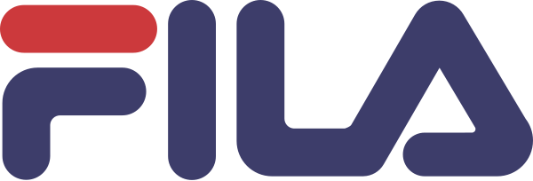

E-ticaret platformu geçişi:
teklif sunumu
RFP ECOM-RFP-2026 teklif yapısının (§23.1) on iki bölümü ve zorunlu eklerin (§23.2) tamamına CommerceLab'ın yanıtı: şirket, çözüm, fonksiyonel uyum, mimari, entegrasyon, migrasyon, plan, SLA, ticari yapı, varsayımlar ve Infosec.
Teklif · Kasım 2026
Sürüm · v1
Hazırlayan · Commerce Lab E-Ticaret Çözümleri A.Ş.
Teklif yapısı · RFP §23.1 ve §23.2
Bu sunum RFP'nin istediği sırayla ilerler
| # | RFP bölümü | Bu sunumda | Durum |
|---|---|---|---|
| 01 | Executive Summary | Ana mesaj, Shaya önceliklerine karşılık, başarı ölçütlerine taahhüt | Hazır |
| 02 | Company Profile and References | Kim olduğumuz, farkımız, referans müşteriler, liderlik ekibi, yeterlilikler (§16) | Hazır |
| 03 | Proposed Solution Overview | Kapsam ve sahiplik, platform bileşenleri, kanallar, ürün yetenekleri, checkout, omnichannel, raporlama, AI yetkinlikleri | Hazır |
| 04 | Functional Fit-Gap Response | 69 gereksinimin özeti ve bölüm bazlı karşılıklar; tam matris Excel ekinde | Hazır · ürün ekibi teyidi |
| 05 | Technical Architecture and Security | Hedef mimari, veri sahipliği, ilkeler, yığın, AWS topolojisi, güvenlik, ölçekleme | Hazır |
| 06 | Integration Strategy | ComHub modeli, §8 alanları, §8.6 envanter eşlemesi, Control Tower, loyalty checkout | Hazır |
| 07 | Data Migration Strategy | Kapsam, üç aktarım yolu, prova ve mutabakat, SEO geçişi | Hazır |
| 08 | Implementation Plan, Timeline, Resources | Kapsam, metodoloji, zaman planı, kilometre taşları, RACI, ekip, test, risk, teslimatlar | Süreler keşifte teyit |
| 09 | Support and SLA Proposal | KPI'lar, yük testi kanıtı, SLA tablosu, destek modeli, change management, DR | DR test raporu temin edilecek |
| 10–12 | Commercial · Assumptions · Infosec | Ticari teklif yapısı (rakamlar ayrı dosyada), varsayım ve kapsam dışı listesi, Infosec kanıt paketi | Rakamlar ticari dosyada |
| Ek | Zorunlu ekler (§23.2) | Son slaytta ek kayıt defteri: hangi ek nerede, durumu ne | Hazır |
01
RFP §23.1 · 1
Yönetici özeti
Mevcut ERP, OMS ve CRM yerinde kalır; iki markanın web, uygulama ve pazaryeri deneyimi tek composable platforma taşınır. Taahhütler canlı üretimden ölçülmüş değerlere dayanır.
Yönetici özeti · RFP §1
Yazılım değil, dijital IT ekibiniz gibi çalışan bir operasyon platformu
01
RFP'nin tamamı, fazlasıyla
Talep edilen her başlık standart platform yeteneğiyle karşılanır; metrik beklentileri canlı üretim ölçümleriyle belgelenir.
02
Mevcut sistemler yerinde kalır
WinRetail ürün, fiyat ve fiziksel stoğun; OMS sipariş yaşam döngüsünün; CRM müşteri ve sadakatin kaynağı olmaya devam eder. Biz deneyim ve orkestrasyon katmanıyız.
03
Para kazandıran ortaklık
Her sprint ölçülebilir iş çıktısı üretir; performans, dönüşüm ve operasyon KPI'ları tek konsolda izlenir.
04
Bugün istemediğiniz, yarın hazır
OMS/TMS/WMS, multi-vendor dropship, B2B, çoklu ülke ve para birimi aynı platformda açılır; yeniden platform değişikliği gerekmez.
05
AI ile çalışan platform
MCP olarak yayınlanmış API'ler, konuşarak operasyon, AI PIM, semantik arama ve agentic commerce uyumu bugün; ACOMS ile yarı otonom operasyon yol haritası.
06
Kanıtlanmış altyapı
%99,99 erişilebilirlik, ayda 480M+ API isteği, günde 20K+ sipariş; 16 kurumsal tenant tek platformda.
Shaya'nın hedefleri · RFP §3.1–3.2
Her hedefin platformda somut bir karşılığı var
| Hedef (RFP) | CommerceLab karşılığı |
|---|---|
| Müşteri deneyimi ve dönüşümün iyileştirilmesi | Yeni tasarım sistemi ile Next.js web ve native iOS/Android; SSR + CDN ile 2 sn altı sayfa hedefi; arama, kişiselleştirme ve A/B testi altyapısı |
| Checkout'un sadeleştirilmesi, sadakat entegrasyonunun güçlenmesi | Guest, üye, express ve mobil checkout tek orkestrasyonda; puan + kart multi-tender; CRM provizyon akışı her adımda geri alınabilir |
| Sipariş ve müşteri görünümünün kanal bağımsız olması | Unified Order History: web, mobil, pazaryeri ve mağaza siparişleri tek ekranda; iade ve değişim talepleri OMS'e event ile |
| Omnichannel operasyon, operasyonel verimlilik ve maliyet | Click & Collect, mağazada iade ve mağaza stoğu görünümü; Control Tower ile uyuşmazlıklar müşteriden önce yakalanır ve otomatik düzeltilir |
| Kampanya ve içerik yönetim hızı; mobil uygulamanın yeni tasarımı | Drag & drop CMS web ve app için ortak; zamanlama, deeplink, app-only kampanya; uygulama güncellemesi gerektirmeden yayın |
| Yeni marka, ülke ve kanal açılımına hazır yapı; çoklu marka merkezi yönetimi | Çok kiracılı, multi-site/country/currency platform; ikinci marka yapılandırmayla açılır; B2B, marketplace operator ve agentic commerce aynı çekirdekte |
| API-first, headless/composable, bulut uyumlu, izlenebilir ve test edilebilir mimari | Her yetenek REST ve GraphQL ile açık PBC; AWS/EKS üzerinde otomatik ölçekleme; CI/CD, kalite kapıları, APM ve merkezi log; üretici bağımlılığı yok, tam export |
Başarı ölçütleri · RFP §3.3 ve §11.1
Taahhütler ölçülmüş değerlere dayanır
| KPI | RFP hedefi | Bugün ölçülen | Shaya taahhüdü ve ölçüm |
|---|---|---|---|
| Uptime | ≥ %99,9 aylık | %99,99 platform erişilebilirliği | ≥ %99,9 aylık, planlı bakım hariç; Uptime Kuma + UptimeRobot raporu |
| Ana sayfa ve PDP yükleme | < 2 sn | SSR + CDN, çalışma anında render yok | < 2 sn; cihaz, ağ ve ölçüm aracı (Lighthouse / CrUX) keşifte mutabık kalınır |
| Checkout yükleme | < 3 sn | Kritik adımlar önbellekli API üzerinden; API p95 250 ms | < 3 sn; New Relic Browser ile adım bazlı izleme |
| Peak yük | Hacim tahminine göre, yük ve stres testiyle | Kampanya profili ×4 stres, ×8 sıçrama; hata 0 | 280K oturum/gün ve 5K/saat işlem hedefinin katlarıyla go-live ve her kampanya öncesi test |
| Go-live'da açık kritik hata | 0 | Go/No-Go kriteri | Critical = 0; High için yazılı workaround; M7 paketi Steering Committee onayında |
| UAT | Onaylı kritik iş senaryoları tamam | Marka ekipleriyle senaryo bazlı UAT | M6 UAT Sign-Off; senaryo listesi keşifte birlikte yazılır |
Kaynaklar: New Relic APM (Apdex 0,95, ortalama 379 ms), Uptime Kuma, k6 yük testi Ekim 2026. Ayrıntılar 09. bölümde.
02
RFP §23.1 · 2 ve §16
Şirket profili ve referanslar
Perakendecilerin içinden gelen bir ekip, kendi geliştirdiği uçtan uca ticaret ve operasyon platformu, Türkiye'nin önde gelen markalarında canlı kurulumlar.
Kim olduğumuz
Kurumsal müşteriler için tek platformda ticaret ve operasyon
CommerceLab, bulut tabanlı kurumsal bir Commerce & Supply Chain platformudur. Tüm satış kanallarını, iş modellerini ve operasyon ihtiyaçlarını tek, esnek ve ölçeklenebilir sistemden yönetir: bir Commerce ERP / işletim sistemi.
- Vizyon: dijital ticaret ve operasyonda önde gelen platform sağlayıcısı olmak.
- Misyon: müşterilerimizin satış potansiyelini en üst düzeye çıkarırken operasyonel mükemmelliği en düşük maliyetle sağlamak.
- Şirket: Commerce Lab E-Ticaret Çözümleri A.Ş. · Windowist Tower, Maslak, İstanbul · kurucu ortakları tarafından yönetilen yazılım ürün şirketi.
360°satış ve tedarik zinciri yaşam döngüsünün tamamı: headless commerce, PIM, CMS, ödeme, CRM, kampanya, pazaryeri, OMS, TMS, WMS
30+uzman; Türkiye'nin önde gelen 100+ perakendecisinde edinilmiş deneyim
16kurumsal tenant tek çok kiracılı SaaS platformunda; günde 20K+ sipariş, ayda 480M+ API isteği
Konumlandırma
Neden farklıyız
01
360° kapsama
Ticaret ve tedarik zinciri yığınının tamamını kapsayan, en üst düzeyde genişletilebilir ürünler. Bugün kullanmadığınız modül yarın aynı platformda açılır.
02
Operatörler tarafından kuruldu
Boyner, Beymen, Koton ve Demsa'da e-ticaret ve IT'yi kurmuş ekip; her ürün kararında sahadan gelen perakende deneyimi.
03
Satış × operasyon
Satmak ile teslim etmek arasındaki boşluğu uçtan uca kapatırız: deneyim katmanından sipariş, stok ve lojistiğe.
04
Genişletilmiş ekibiniz
Özel ihtiyaçlar terzi işi karşılanır; dijital IT departmanınız gibi çalışır, yazılım teslim edip çekilmeyiz. Her sprint ölçülebilir iş çıktısı üretir.
05
Üretici bağımlılığı yok
Sürüm karmaşası yaratmayan, kapalı ekosisteme hapsetmeyen ürün şirketi; Open API ve tam export ile veri ve URL'ler her zaman sizindir.
06
AI ile çalışan platform
Ürünün içinde (AI PIM, arama, conversational commerce) ve ürünü geliştirirken (AI destekli kod, test ve review); ACOMS ile yarı otonom operasyon yol haritası.
Referans müşteriler


Moda, ayakkabı, ev, perakende ve QSR markaları aynı platformda

RFP §16 referans tablosu (marka, ülke/sektör, kapsam, go-live, iletişim kişisi) ve müşteri paylaşım izinleri ayrı ekte verilir. Global markaların Türkiye operasyonları, çok markalı gruplar ve pazaryeri satıcıları aynı çok kiracılı platformda çalışır.
Liderlik ekibi
Sahadan gelen liderlik, 20+ kişilik mühendislik ekibi
Onur Kemer
Kurucu ortak · CEO
- 25 yıl sektör deneyimi
- Boyner, Demsa ve Koton'da IT ve e-ticaret departmanlarını kurdu ve yönetti
- Boyner Yazılım ve İş Geliştirme liderliği
- ERP ve üretim planlama mühendisliği (iCron, Ariva)
YTÜ Bilgisayar Mühendisliği, 2002
İsmail Danacı
Kurucu ortak · CTO
- 20 yıl sektör deneyimi
- CommerceLab e-ticaret platformunu (v1) inşa etti
- Boyner ve Koton e-ticaret altyapısı
- Boyner POS sistemleri · ERP mühendisliği (Bilteks)
Sakarya Üniversitesi, Bilgisayar Programcılığı, 2008
Arif Kula
CPO · Ürün Direktörü
- 32 yıl sektör deneyimi
- Boyner CTO (3 yıl) · Beymen CTO (12 yıl)
- Boyner IT Müdürü (8 yıl)
- DorukNet, yazılım mühendisi (4 yıl)
İTÜ Matematik Mühendisliği, 1992
Hakan Gürses
Yazılım Geliştirme Müdürü · Mimar
- 21 yıl deneyim
- CommerceLab e-ticaret platformunu (v1) inşa etti
- Pazaryeri entegrasyon platformu (Altınyıldız)
- Boyner CRM · Medical Park akış verisi işleme
Yeditepe Bilgisayar Müh., 2005 · Doğuş Üniv. doktora, 2014
Faruk Öksüz
Yazılım Geliştirme Müdürü · Mimar
- 30 yıl sektör deneyimi
- IBM POS sistemleri, Yazılım Geliştirme Direktörü (14 yıl)
- Kampanya sistemleri · sadakat · dağıtık veri
- Pfizer yazılım müdürü
ODTÜ Bilgisayar Mühendisliği, 1999
Gökhan Koçak
Yazılım Geliştirme Müdürü · Mimar
- 22 yıl deneyim
- CommerceLab e-ticaret platformunu (v1) inşa etti
- 5px Yazılım ve Proje, kurucu ortak
- RND E-Ticaret Çözümleri CTO · 30 e-ticaret sistemi devreye aldı
Uludağ Üniversitesi, 2004
Tedarikçi yeterlilikleri · RFP §16
RFP §16'nın istediği yedi başlık
| Başlık | Yanıt |
|---|---|
| Şirket profili ve sahiplik yapısı | Commerce Lab E-Ticaret Çözümleri A.Ş., İstanbul; kurucu ortakları (CEO, CTO) tarafından yönetilen yazılım ürün şirketi; Teknopark Ar-Ge projeleri (ACOMS) |
| Platform ve teknoloji yetkinlikleri | Kendi geliştirdiği 10 PBC'lik ürün ailesi; .NET, PostgreSQL, MongoDB, Redis, Elasticsearch, RabbitMQ, GraphQL, Kubernetes/AWS; Next.js web ve native mobil |
| Türkiye ve uluslararası teslimat kapasitesi | İstanbul merkezli 30+ kişilik ekip; BestCloudForme ile 7/24 operasyon; multi-country ve multi-currency platform, global markaların Türkiye operasyonları canlıda |
| Moda, kozmetik, perakende ve omnichannel referansları | Ayakkabı ve giyim (Skechers, Brooks, Hunter, Steve Madden, On, Fila, Asics, Decathlon), ev (Madame Coco), perakende (A101), QSR (KFC), çok markalı gruplar (HD Holding, Grace Brands); Click & Collect, ship-from-store ve mağaza iadesi canlı |
| Benzer hacim, entegrasyon ve migrasyon deneyimi | Platform geneli günde 20K+ sipariş, ayda 480M+ API isteği; ERP, OMS, CRM, PSP ve 20+ kargo entegrasyonu; farklı platformlardan katalog, müşteri ve sipariş geçmişi geçişleri |
| Ürün yol haritası ve Ar-Ge yaklaşımı | ACOMS otonom ticaret operasyonu (kural → optimizasyon → istatistik → ML), AI PIM, conversational commerce, MCP/agentic arayüzler; haftada birden çok üretim sürümü |
| Finansal ve operasyonel sürdürülebilirlik | Yinelenen SaaS gelir modeli, 16 kurumsal tenant, kendi ürünü üzerinde kendi ekibi; bağımsız denetim ve finansal belgeler talep halinde paylaşılır |
03
RFP §23.1 · 3 ve §5
Önerilen çözüm
Deneyim ve orkestrasyon katmanı bizde; ürün, stok, sipariş ve müşteri kayıt sistemleri sizde kalır. Her kanal tek Commerce Platform üzerinden servis alır.
Çözüm kapsamı ve sistem sahipliği · RFP §5
Ne biz yapıyoruz, ne yerinde kalıyor
| Bileşen | CommerceLab rolü | Mevcut sistem / sahiplik | Teklif durumu |
|---|---|---|---|
| Web ve mobil uygulama | Deneyim, sepet, checkout, hesap; iki marka için ayrı site ve app | Marka dijital kanalları (Ticimax'tan geçiş) | Kapsamda |
| Katalog / PIM | Zenginleştirme, varyant, medya, kanal içeriği, yayın | WinRetail ürün, fiyat ve kategori ana verisi | Kapsamda |
| İçerik / CMS | Drag & drop sayfa, banner, landing, blog; web + app | — | Kapsamda |
| Siparişler | Oluşturma, OMS'e devir, durum görünümü, Unified Order History | Retail Markup OMS: yaşam döngüsü, satılabilir stok, kargo, iade | Entegrasyon |
| Müşteri ve sadakat | Operasyonel müşteri deneyimi: hesap, adres, izin, istek listesi | CRM: müşteri master, puan, tier, kupon, kampanya kuralı | Entegrasyon |
| Kampanya ve promosyon | Sepet seviyesi kural motoru; CRM kurallarını tekrarlamaz, tamamlar | CRM kampanya ve kupon yönetimi | Kapsamda |
| Ödeme | Ödeme orkestrasyonu, 3D, fraud, multi-tender, mutabakat | PSP ve bankalar | Kapsamda |
| Pazaryeri | Marketplace Seller: ürün kartı, stok, fiyat, sipariş | Trendyol, Hepsiburada, Amazon | Kapsamda |
| OMS · WMS · TMS kurulumu | Teklif dışı; ileride aynı platformda açılabilir | Mevcut sistemler | Kapsam dışı |
Platform bileşenleri
On paketlenmiş ürün, tek ekosistem; Shaya için altısı kapsamda
KanallarWebShop (Next.js) · AppShop (native iOS, Android) · pazaryeri · ileride POS, chat, voice, agentic
DeneyimHeadless Experience Layer: ayrık, omnichannel storefront ve native uygulamalar; REST / GraphQL
OrkestrasyonCommerce Dispatch Engine: her satın alma bağlamını (marka, kanal, segment) doğru yeteneğe yönlendirir
Core commercePIM / Katalog Headless CMS Kampanya motoru Payment / Checkout Operasyonel CRM Marketplace Seller Marketplace Operator
Tedarik zinciriOMS TMS WMS Shaya'da kapsam dışı; Retail Markup OMS entegre edilir, ileride aynı platformda açılır
EntegrasyonComHub · Orchestration Manager · Control Tower: ERP, OMS, CRM, PSP, pazaryeri, kargo, pazarlama, analitik
Koyu rozet teklif kapsamındaki PBC'ler; açık rozet aynı platformda hazır, Shaya için opsiyon. Her PBC bağımsız sürümlenen bir Packaged Business Capability'dir.
Kanal katmanı · RFP §5.1.1
Dört kanal, tek Commerce Platform
Web
Next.js · responsive · PWA
SSR ve statik üretim; ürün listesi, fiyat ve linkler ilk HTML'de. Çalışma anında render yok, JAMstack dağıtım, CDN önünde. Marka başına ayrı tasarım ve domain.
iOS
Native uygulama
Aynı GraphQL API; yeni tasarıma geçiş kapsamda. CMS bileşenleri uygulama güncellemesi gerektirmeden yayınlanır; deeplink, push, Adjust attribution.
Android
Native uygulama
iOS ile ortak bileşen sözleşmesi; app-only kampanya ve banner; in-app browser ile dış link; mağaza bulucu ve Click & Collect akışları.
Pazaryeri
Trendyol · Hepsiburada · Amazon
Marketplace Seller ile çift yönlü: ürün kartı, stok, fiyat ve sipariş. Kanal bazlı emniyet stoğu, mutabakat ve otomatik düzeltme; sipariş platformda oluşur, OMS'e devredilir.
Tüm kanallar aynı katalog, stok, fiyat, kampanya ve müşteri servislerini kullanır; kanal bazlı görünürlük ve içerik farkı konsoldan yönetilir (RFP §6.1 yayın ve görünürlük).
Commerce Platform yetkinlikleri · RFP §5.1.1.1
RFP'nin istediği beş yetkinlik alanı ve sahibi modül
| Alan (RFP) | İstenen | Nasıl karşılanır | Modül |
|---|---|---|---|
| Customer Experience | Üyelik, OTP/sosyal hızlı giriş, hesap ve adres yönetimi, e-arşiv fatura, sadakat ve kampanya ekranları, favori ve istek listesi, fiyat/stok bildirimi | Hesap merkezi tek ekran; Google, Apple ve OTP (SMS/WhatsApp) girişi; favori ürünlerde fiyat düşüşü ve stok yenilenmesinde push/e-posta; sadakat ekranları CRM servisleriyle | Operasyonel CRM · AppShop |
| Commerce Services | PLP (sonsuz kaydırma/sayfalama, hızlı sepet ve favori, stoksuzları sona taşıma), PDP (zengin medya, varyant, yorum), sınırsız kategori derinliği, çoklu kategori, kategori bazlı dinamik filtre, çoklu seçim, sepet | Searchindising ile kategoriye göre değişen facet seti; kural tabanlı sıralama ve stoksuz ürün politikası; ürün birden fazla kategoriye bağlanır; varyant görsel ve stoğa göre değişir | PIM · Search · Headless Experience |
| Checkout | Ödeme orkestrasyonu, sipariş oluşturma | Guest, üye, express ve mobil checkout; multi-tender; CRM puan provizyonu; sipariş OMS'e event ile devredilir | Payment / Checkout |
| Sales Aftercare | Sipariş görüntüleme ve takip, iade ve değişim talebi, durum görüntüleme | Unified Order History (web, mobil, pazaryeri, mağaza); iade/değişim talebi platformda açılır, OMS'te işlenir, statü geri akar | Headless Experience · ComHub |
| Business Services | CMS, PIM, raporlama, dashboard | Tek yönetim konsolu: rol bazlı yetki, onay akışı, audit log; satış, sipariş, loyalty ve operasyon panoları; Power BI ve veri ambarı aktarımı | CMS · PIM · Konsol |
Ürün yetenekleri I
PIM, arama ve içerik
PIM / Katalog
Ürün verisi tek yerden
- Her ürün tipi: varyant, bundle, konfigüre edilebilir, dijital, hizmet.
- Model koduyla otomatik varyant; renk swatch'ları ve ilişkili ürünler karşılıklı güncellenir.
- Kural tabanlı kategori ve menü yönetimi; include/exclude listeleriyle karmaşık katalog.
- Yaşam döngüsü: workflow ve kural motoruyla aktivasyon, deaktivasyon, arşiv.
- Toplu işlem: Excel + eşleme profili, hata raporu, mükerrer kontrolü; feed yönetimi.
Arama · Searchindising
Elasticsearch üzerinde
- Akıllı arama ve otomatik tamamlama; synonym, typo tolerance, anahtar kelime yönetimi.
- Kategori bazlı facet, çoklu seçim, filtre içinde arama; SEO dostu facet URL'leri.
- Search merchandising: sabitleme, kural, zero-result yönetimi.
- Analitik: arama terimi, dönüşüm ve sonuçsuz arama raporları.
- Vektörel arama ve conversational commerce modülleri hazır.
Headless CMS
Web ve app için tek panel
- Drag & drop bileşen yerleşimi: banner, slider, ürün gridi, story; kod gerektirmez.
- Zamanlama: saat bazında yayın başlangıç/bitiş, anlık aktif/pasif.
- Omnichannel yayın: PLP, landing ve blog içeriği web, iOS ve Android'de aynı anda; uygulama güncellemesi gerekmez.
- Deeplink ve linkleme: her sayfa için otomatik iOS/Android deeplink; iç ve dış link, in-app browser.
- Rol, onay, audit log, önizleme, versiyon ve geri alma; dil ve lokasyon bazlı içerik.
Ürün yetenekleri II
Kampanya, ödeme, müşteri ve pazaryeri
Kampanya motoru
Kural ve aksiyon motoru
- Omnichannel kampanya bağlamı: kanal, segment, sepet, lokasyon.
- Best-choice mekanizması ve öncelik grupları.
- Event-action çekirdek: kullanım, kazanım, mesaj, özel aksiyon.
- CRM ve loyalty entegrasyonu; harici kupon ve gift card.
Payment / Checkout
Ödeme orkestrasyonu
- Tüm büyük PSP'ler; dinamik yönlendirme, failover.
- Kural tabanlı zorunlu 3D, fraud skorlama, kart saklama tokenization ile.
- Multi-tender: puan + kart, gift card, kupon, BNPL, taksit.
- Auto-fix ve mutabakat; başarısız ödeme raporları.
Operasyonel CRM
Müşteri ve hesap
- Kayıt ve kimlik: OTP, sosyal giriş, SSO seçenekleri.
- Profil, adres defteri, sipariş geçmişi, istek listesi, iletişim tercihleri.
- Entegre izin yönetimi (KVKK, İYS), anonimleştirme ve hesap silme.
- Segmentasyon: kural ve yaşam döngüsü bazlı; harici loyalty ile çalışır.
Marketplace Seller
Uçtan uca pazaryeri
- Tek noktadan tüm pazaryerleri; ürün bazlı tanım gerektirmez.
- Dinamik çağrı hızı sipariş, stok ve fiyat değişim hızına göre.
- Kanal ve hiyerarşi bazlı emniyet stoğu; stok ve fiyat farkı otomatik düzeltme.
- Mutabakat: gecikme, iptal, ödeme, iade.
Checkout ve ödeme · RFP §5.1.2.7
Dört checkout modeli, altı ödeme türü, tek orkestrasyon
Checkout modelleri
Guest · üye · express · mobil
Aynı orkestrasyon; adres, fatura ve teslimat seçenekleri (adrese, mağazaya, Click & Collect) kanal ve segmente göre. Stok ve fiyat sipariş anında OMS available stoğu ve ERP fiyatıyla doğrulanır.
Ödeme türleri
Kredi kartı · banka kartı · puan · hediye kartı · kupon · BNPL
Multi-tender: puan + kredi kartı, puan + banka kartı, puan + hediye kartı aynı siparişte. Kısmi iade ve iptalde ödeme kırılımı korunur, her araç kendi kanalına iade edilir.
Loyalty-driven checkout
CRM servisleri sepet içinde
Harcanabilir puan sorgusu, Point Provision, Remove Provision, Finish Transaction; kupon provizyonu ve iptali. Puan kararı CRM'de kalır, platform yalnızca orkestre eder; CRM yanıt vermezse kartla ödeme sürer.
Güvenlik
3D Secure ve fraud
Kural tabanlı zorunlu 3D (tutar, segment, kart tipi, risk skoru); fraud skorlama; kart saklama PSP tokenization ile, kart verisi platformda tutulmaz. Sanal POS failover ile ikinci PSP'ye geçiş.
Personel programı
Retter entegrasyonu
Personel doğrulama, bakiye sorgulama ve harcama bildirimi checkout adımına bağlanır; iade ve iptalde bakiye geri yüklenir. Servis sözleşmesi keşifte netleştirilir.
Mutabakat
Ödeme tutarlılığı
PSP, banka ve sipariş kayıtları günlük mutabakat; tutarsızlıkta auto-fix ve Control Tower uyarısı. İptal, iade ve kısmi iade PSP'ye otomatik iletilir.
Sipariş, iade ve değişim · RFP §5.1.2.5–5.1.2.9
Sipariş OMS'te yaşar, müşteri tek ekranda görür
Platformun yaptığı
- Dijital siparişler (web, mobil, pazaryeri) platformda oluşur, oluşur oluşmaz OMS'e event ile devredilir; teslim onayı gelmeden kapanmaz.
- Unified Order History: web, mobil, pazaryeri ve OMS'te oluşan mağaza siparişleri müşteriye tek listede; durumlar OMS'ten geri akar.
- Kargo bilgisi OMS'ten alınır; takip numarası ve durum müşteri ekranında ve bildirimlerde (JetSMS, e-posta, push).
- İade ve değişim talebi platformda açılır: tam/kısmi iade, tam/kısmi değişim, beden, renk ve ürün değişimi; iade uygunluğu PIM'den.
OMS'in sahibi olduğu, bizim gösterdiğimiz
- Sipariş orkestrasyonu, dağıtım, paket ve sevkiyat, kargo entegrasyonları, mağaza siparişleri, available inventory.
- İstisna yönetimi: kargo hasarı, operasyonel hata, yanlış ürün, iadeye kapalı ürün ve memnuniyet süreçleri OMS kurallarıyla; yetkili kullanıcı istisnası audit trail'de.
- Statü geri akışı: iade ve değişim durum güncellemeleri event ile platforma; fatura saatte bir; müşteri bildirimi platformdan tetiklenir.
- Control Tower iki taraf arasındaki her farkı (kanalda var OMS'te yok, OMS'te iptal kanalda açık) raporlar ve düzeltir.
Overselling önleme: satış kararı yalnız OMS available stoğuyla verilir; OMS'e henüz ulaşmamış ve pending siparişler platform tarafında düşülür; kampanya zirvesi ve entegrasyon gecikmesinde kritik stok hızlı şeritte kanala kapatılır.
Omnichannel · RFP §7
Üç omnichannel fonksiyon, üçü de konfigürasyonla
| ID | Fonksiyon · beklenen kapsam | Platformun rolü | OMS / mağaza rolü | Yanıt |
|---|---|---|---|---|
| OM-01 | Click & Collect: mağaza seçimi, stok rezervasyonu, bildirim, teslim doğrulama | Checkout'ta mağaza seçimi ve mağaza stoğu; rezervasyon talebi OMS'e; hazır/teslim bildirimleri; teslim kodu | Rezervasyon, hazırlama ve teslim onayı OMS ve mağaza uygulamasında | C |
| OM-02 | Return To Store: online siparişin mağazada iadesi ve sistemlere aktarımı | Müşteri iade talebini açar, mağaza seçer; iade durumu ve geri ödeme müşteri ekranında | Mağaza iadeyi OMS'te kabul eder; ERP ve CRM'e aktarım OMS üzerinden; ödeme iadesi platform PGW ile | C |
| OM-03 | Store Stock Visibility: mağaza bazlı stok ve tahmini teslimat | PDP ve sepette mağaza bazlı stok ve tahmini teslim süresi; mağaza bulucu | Mağaza stoğu OMS'ten (ERP kaynaklı) event ile; emniyet stoğu kuralı kanalda | C |
Hazır desenler
Reserve & Collect, Click & Collect, ship-from-store, mağazadan transfer ve shop-local akışları platformda canlı müşterilerde çalışıyor.
Entegrasyon tasarımı
Üç fonksiyon da Retail Markup OMS ile arayüz tasarımı gerektirir; mesaj sözleşmeleri keşif fazında yazılır, mock servislerle SIT erken başlar.
İleride
Mağaza içi sipariş, endless aisle ve clienteling modülleri aynı platformda; mağaza POS entegrasyonu istenirse Instore uygulaması açılır.
Raporlama ve analitik · RFP §5.1.2.10
Operasyon ekibinin ihtiyaç duyduğu göstergeler tek konsolda
Satış
Kanal, marka, gün, saat
Web, app ve pazaryeri bazında; iki marka ayrı ve birleşik; saatlik satış ve dönüşüm; kampanya dönemlerinde canlı izleme.
Sipariş
Hacim, iptal, iade, değişim
Sipariş hacmi ve ortalama sepet; iptal, iade ve değişim oranları kanal ve ürün bazında; OMS durumlarıyla birlikte.
Loyalty
Puan, tier, kampanya
Puan kullanım ve kazanımı, tier dağılımı, kampanya ve kupon performansı; CRM verisiyle birleşik görünüm.
Operasyon
Control Tower panoları
Sipariş durumu, entegrasyon sağlığı, stok tutarlılığı, kargo operasyonu; şiddet bazlı uyarı ve saatlik özet.
- Dışa aktarım: Power BI, veri ambarı ve data lake için zamanlanmış export ve API; GA4 data layer eksiksiz ve özelleştirilebilir.
- Arama analitiği: terim, sonuçsuz arama, dönüşüm; merchandising kararları için.
- Teknik KPI'lar aynı yerde: sayfa ve API hızı, hata oranı, entegrasyon gecikmesi (New Relic, Grafana).
- Bot ve AI crawler trafiği raporlanır; crawl bütçesi analizi için sunucu loglarına erişim.
AI yetkinlikleri · önerilen çözüm
AI destekli ticaret: asistandan otonom operasyona
ACOMS vizyonu: satış, pazarlama ve operasyon insan yönlendirmeli kararlardan yarı otonom ve otonom yürütmeye kademeli taşınır. Dört alan bugün platformda çalışır; otonomi bunların üzerine kurulur.
01
Konuşarak yönetim
Tüm API'ler MCP olarak yayınlı; LLM Socket ile her işlem doğal dille, ekran tıklama akışıyla ya da API üzerinden yaptırılır. Çalışan, pazaryeri ve müşteri sorularına aynı asistan yanıt verir.
02
Ticari zekâ
Ürün, stok, fiyat, içerik, kampanya, ziyaret ve davranış verisinin tamamı sorgulanır; ödeme ve teknik loglarla dönem karşılaştırmalı ticari değerlendirme ve sağlık kontrolü.
03
AI destekli ürün ve operasyon
Fotoğraftan PIM: sınıflandırma, nitelik, içerik ve açıklama; kanal başına otomatik kategori ağacı ve nitelik eşlemesi; AI destekli kargo seçimi ve sipariş sourcing.
04
Agentic'e hazır ekosistem
Google UCP ve OpenAI ACP ile agentic commerce; Claude Commerce Agent ve Merchant Agent uyumu; iş yetkinlikleri agent'lara açık; OnX üyesi ilk Türk firması.
Aynı AI katmanı müşteri tarafında semantik arama ve conversational commerce'i, içerik tarafında prompt ile sayfa tasarımı ve yayını besler. Liste ve Shaya örnekleri sonraki iki slaytta.
AI yetkinlikleri · liste
On iki AI yetkinliği ve Shaya için karşılığı
| # | Yetkinlik | Ne sağlar | Shaya için | Durum |
|---|---|---|---|---|
| 1 | Konuşarak işlem (MCP + LLM Socket) | Tüm API'ler MCP olarak yayınlı; işlem doğal dille, ekran tıklama akışıyla veya API ile yapılır | Kampanya açma, fiyat ve stok düzeltme, sipariş müdahalesi ekran ezberi gerektirmez | Platformda |
| 2 | Her şeyi sor | Çalışan, pazaryeri ve müşteri sorularına platform verisi üzerinden yanıt | Ekip, pazaryeri operasyonu ve müşteri hizmetleri tek asistanla çalışır | Platformda |
| 3 | Ticari ve teknik analiz | Ürün, stok, fiyat, içerik, kampanya, ziyaret, davranış, ödeme ve teknik loglar; dönem karşılaştırmalı | Haftalık ticaret toplantısı verisi ve site sağlık kontrolü tek soruda | Platformda |
| 4 | AI PIM | Fotoğraftan sınıflandırma, nitelik, içerik ve açıklama üretimi | 44K / 21K SKU'luk katalogda sezon açılışı ve ürün onboarding'i hızlanır | Platformda |
| 5 | Kanal eşlemesi | Satış kanalı başına otomatik kategori ağacı, nitelik ve nitelik değeri eşlemesi | Pazaryeri ve yeni kanal açılışında manuel eşleme kalkar | Platformda |
| 6 | Semantik arama | Anlam tabanlı arama ve öneri; eş anlamlı ve doğal dil sorguları | "hediyelik vanilya kokulu set" gibi aramalar doğru sonuç verir | Platformda |
| 7 | Conversational commerce | Sohbet ve sesle alışveriş, LLM destekli müşteri asistanı | Web ve app'te asistanlı alışveriş; müşteri hizmetleri yükü azalır | Platformda |
| 8 | Agentic commerce | Google UCP ve OpenAI ACP uyumu; Claude Commerce Agent ve Merchant Agent | Ürünler AI agent'ların alışveriş akışlarında bulunur ve satılır | Sözleşme öncesi teyit |
| 9 | Agentic operations | İş yetkinlikleri agent'lara açık; OnX üyesi ilk Türk firması | Rutin operasyon adımları onaylı biçimde agent'lara devredilir | Sözleşme öncesi teyit |
| 10 | AI destekli kargo seçimi | Sipariş bazında kargo firması önerisi (TMS) | Teslimat süresi ve kargo maliyeti optimizasyonu | İsteğe bağlı modül |
| 11 | AI destekli sourcing | Siparişin hangi stok noktasından karşılanacağı önerisi | Mağaza ve depo sourcing kararı veriye dayalı verilir | İsteğe bağlı modül |
| 12 | Prompt ile sayfa tasarımı | CMS bileşen kütüphanesi üzerinde prompt'tan sayfa taslağı, önizleme, onay ve yayın | Kampanya ve landing sayfaları tasarım kuyruğu beklemeden yayına çıkar | CMS ile · projede açılır |
AI yetkinlikleri · Shaya'nın gününde
Sor, yaptır, yayınla: üç örnek
Ticaret ekibi
Analiz ve işlem
"Geçen haftaya göre dönüşümü düşen ilk 10 kategori ve olası nedenleri?"Analitik, ödeme ve stok verisi dönem karşılaştırmalı tek yanıtta "Hafta sonu için %20 sepet kampanyasını taslağa al."MCP ile kampanya taslağı; yetkili kullanıcı onaylar, sonra yayınlanırOperasyon ve IT
Sağlık kontrolü ve mutabakat
"Dün 14:00–16:00 arasındaki checkout hatalarını özetle, kök neden ne?"Teknik loglar, ödeme sonuçları ve performans metrikleri birlikte okunur "WinRetail'den bugün gelmeyen fiyat kayıtlarını listele."Control Tower verisi; eksik kayıt ve yeniden deneme tek ekrandaMüşteri
Semantik arama ve asistan
"Hediye için vanilya kokulu, bütçesi uygun bir vücut bakım seti."Semantik arama ve conversational commerce; sepete kadar sohbette AI agent üzerinden gelen siparişUCP / ACP uyumlu katalog ve checkout ile agent alışveriş akışlarıPrompt"Yeni koleksiyon landing sayfası"
→
TaslakCMS bileşen kütüphanesi
→
Önizlemeweb ve app
→
Onayrol ve iş akışı
→
Yayınzamanlı · audit log
Kontrol sizde: AI öneriyi ve taslağı hazırlar; her yazma işlemi rol yetkisi ve onay akışından geçer, audit log'a yazılır. Veri tenant sınırının dışına çıkmaz.
Gelecek hazırlığı
Bugün istemediğiniz, yarın hazır
Global
Multi-country · currency · site
Yeni ülke, para birimi, fiyat listesi ve depo platform değiştirmeden açılır; hreflang ve dil bazlı URL yapısı hazır.
İş modelleri
B2B · B2B2C · marketplace operator
Kurumsal satış, multi-vendor dropship ve satıcı onboarding aynı Commerce Dispatch Engine üzerinde.
ACOMS
Yarı otonom operasyon
Teknopark Ar-Ge projesi: günlük ticaret ve fulfilment kararları danışman modundan tam yetki devrine kademeli taşınır; kural → optimizasyon → istatistik → ML.
Kanallar
POS · sohbet · ses · AI agent'ları
Mağaza POS, sohbet ve sesli alışveriş, UCP/ACP üzerinden AI agent siparişleri aynı Commerce Platform API'lerinden beslenir; yeni kanal yeni entegrasyon demek değildir.
Aynı platform, aynı sözleşme: bu yetenekler ayrı proje değil, mevcut tenant üzerinde yapılandırma ve kısa entegrasyonla açılır. OMS, TMS ve WMS de istendiğinde aynı yolla eklenir.
04
RFP §23.1 · 4 ve §6–7
Fonksiyonel uyum (fit-gap)
Altmış dokuz gereksinimin tamamı konfigürasyonla karşılanır. Bu bölüm her RFP bölümü için "nasıl" sorusunu yanıtlar; tam matris Excel ekindedir.
Fit-gap özeti · RFP §6, §7 ve Ek A
69 gereksinim, 69 konfigürasyon; özel geliştirme yok
69gereksinim satırı
69C · konfigürasyon ile
0D geliştirme · T üçüncü taraf · N karşılanmıyor
| RFP bölümü | Satır | Ana modül |
|---|---|---|
| 6.1 Ürün ve katalog yönetimi | 10 | PIM / Katalog, Search, ComHub |
| 6.2 Arama ve navigasyon | 5 | Search / Headless Experience |
| 6.3 Ürün detay, sepet ve checkout | 8 | Payment / Checkout, Kampanya, CRM |
| 6.5 İçerik, kampanya ve yönetim paneli | 6 | Headless CMS / AppShop |
| 6.6 SEO yönetimi (16 alt başlık) | 37 | Headless Experience / SEO, CMS, PIM |
| 7 Omnichannel | 3 | Headless Experience, ComHub, OMS |
Yanıt kodu tanımı
C = standart ürün, konfigürasyonla
Hiçbir satır özel geliştirme, üçüncü taraf ürün ya da yol haritası gerektirmez. Sıralama algoritması (FR-TEXT-004) için proje özelinde özel kural eklenebilir; kupon ve gift card üçüncü taraf sistemdeyse (FR-023) entegrasyon kapsamdadır.
Doğrulama durumu
Çoğu satır "doküman destekli"; arama, 3D/fraud, CMS drag & drop ve deeplink satırları ürün ekibi teknik teyidinde; omnichannel satırları OMS arayüz tasarımına bağlı. §6.4 müşteri ve üyelik matriste satır olarak açılmamıştır; karşılığı ayrı slaytta.
6.1 Ürün ve katalog yönetimi · FR-TEXT-001…010
Ürün, katalog ve merchandising tek panelden
| Gereksinim | Nasıl karşılanır | Modül |
|---|---|---|
| Merkezi ürün yönetimi; içe/dışa aktarım performansı | Oluşturma, toplu yükleme, nitelik yönetimi tek konsolda; 44K SKU için dakikalar mertebesinde toplu işlem, zamanlanmış export | PIM |
| Varyant ve ilişkili ürün; renk swatch otomatik | Model kodu veya eşleme alanıyla varyant ilişkisi otomatik; sonradan yüklenen renk aynı yapıya girer; ilişkili seri tek işlemle | PIM |
| Kategori atama: tekil, toplu, kural tabanlı | Ürün bir veya birden fazla kategoride; nitelik kurallarıyla otomatik atama, yeni ürünlere de uygulanır | PIM |
| Ürün sıralama: manuel + otomatik, sabitleme, stok durumu | Eklenme tarihi, satış adedi, stok gibi kriterlerle kural; sabitleme ve geri plana alma; proje özel algoritma plugin ile | Search |
| İade uygunluğu yönetimi | Ürün ve toplu düzeyde panelden; metin ve kural checkout ve iade ekranlarına yansır | PIM · ComHub |
| Etiket ve kampanya grupları; Excel ile toplu | Etiketler kategori ve kampanya tanımında kullanılır; Excel ile ekle/çıkar | Kampanya · PIM |
| Toplu işlem ve veri kontrolü; hata raporu; mükerrer önleme | Excel + eşleme profili; satır ve hücre bazında ihlal raporu; onaya kadar kayıt değişmez; anahtar alanla mükerrer kontrolü | PIM |
| Panel içi arama ve filtreleme; toplu işlem; export | Model kodu, SKU, barkod, kategori, renk, beden, stok, yayın durumu; filtrelenen küme üzerinde toplu işlem ve export | PIM · Search |
| Geliştirme ve değişiklik yönetimi; geri alma | Test ve UAT ortamında regresyon, LLM destekli dinamik testler; CI/CD ile ~1,5 dk deploy, aynı sürede rollback | Change mgmt |
| Ürün ve stok bilgisinin güncel gösterimi | Panel değişiklikleri event ile web ve app'e; stoksuz ürün kuralı anında uygulanır; Control Tower eski veriyi yakalar | ComHub · Control Tower |
6.2 Arama ve navigasyon · 6.3 Ürün detay, sepet ve checkout
Aramadan ödemeye on üç gereksinim
| 6.2 | Nasıl karşılanır |
|---|---|
| FR-010 Akıllı arama, otomatik tamamlama | Searchindising; öneri, popüler ve son aramalar; vektörel arama ve conversational modül opsiyonel |
| FR-011 Filtre, facet, sıralama | Kategori bazlı facet seti, çoklu seçim, filtre içi arama, kural tabanlı sıralama |
| FR-012 Synonym, typo, anahtar kelime | Sözlük ve typo toleransı konsoldan; dil bazlı |
| FR-013 Search merchandising, zero-result | Sabitleme, kural, yönlendirme; sonuçsuz aramada alternatif öneri |
| FR-014 Arama analitiği | Terim, dönüşüm, sonuçsuz arama raporları; GA4 data layer |
| 6.3 | Nasıl karşılanır |
|---|---|
| FR-020 PDP zengin içerik, stok, teslimat | Çoklu görsel/video/360°, varyant, yorum; OMS stoğu ve mağaza bazlı teslim süresi |
| FR-021 Cross-sell, up-sell, alternatif | Kural ve davranış tabanlı öneri blokları; crawlable linkler |
| FR-022 Guest ve üye checkout | Guest, üye, express, mobil; tek orkestrasyon |
| FR-023 Kupon, gift card, puan | CRM kupon ve puan servisleri; gift card PSP/CRM; üçüncü taraf ise entegrasyon kapsamda |
| FR-024 Kampanya kuralları, promotion engine | Kural · değerlendirme · aksiyon motoru, best-choice; CRM kurallarını tamamlar |
| FR-025 Stok ve fiyat validasyonu | Sipariş anında OMS available stok ve ERP fiyatıyla doğrulama |
| FR-026 Adres, fatura, teslimat seçenekleri | Adres defteri, kurumsal fatura, teslimat ve Click & Collect seçenekleri |
| FR-027 Fraud ve 3D Secure | Kural tabanlı zorunlu 3D, fraud skorlama, PSP failover |
6.4 Müşteri ve üyelik yönetimi
Üyelikten hesap silmeye yedi başlık
01
Üyelik, giriş, hesap doğrulama
E-posta/şifre, OTP (SMS, WhatsApp) ile saniyeler içinde giriş; Google ve Apple ID; cihaz ve oturum yönetimi. Müşteri master CRM'de, kimlik platformda.
02
Profil ve adres defteri
Fatura ve teslimat adresleri, kayıtlı kartlar (token), e-arşiv fatura PDF'leri tek ekranda; CRM ile profil ve izin senkronu.
03
Personel ve yakını programı
Retter ile personel doğrulama, bakiye sorgulama ve harcama bildirimi checkout'a bağlı; özel fiyat ve limit kuralları kampanya motorunda; iade ve iptalde bakiye geri yüklenir.
04
Sipariş, iade ve geri ödeme geçmişi
Unified Order History; iade ve geri ödeme durumu OMS ve PGW'den; geçmiş Ticimax siparişleri salt okunur taşınır.
05
İletişim izinleri, KVKK, preference center
Kanal bazlı izinler (e-posta, SMS, push, arama); İYS entegrasyonu; Efilli çerez ve izin yönetimi; izin tarih ve kaynağı denetim izinde.
06
Sosyal giriş ve SSO
Google, Apple; istenirse kurumsal SSO (OIDC/SAML) personel programı için; tek kimlik tüm kanallarda.
07
Hesap silme, anonimleştirme, veri sahipliği
Self-servis hesap silme ve anonimleştirme akışı; KVKK veri talebi süreci; CRM'e silme/anonimleştirme eventi; saklama süreleri yapılandırılır.
Not
Bu bölüm RFP'de düz metin olduğundan matriste satır açılmamıştır; keşif fazında satırlara bölünür ve aynı yanıt kodu ile matrise eklenir.
6.5 İçerik, kampanya ve yönetim paneli · FR-TEXT-011…016 ve ek maddeler
Marka ekipleri teknik destek olmadan yayınlar
| Gereksinim | Nasıl karşılanır | Durum |
|---|---|---|
| Merkezi drag & drop panel (web ve app) | Ana sayfa, landing ve app ekranlarındaki banner, slider, ürün listesi ve bileşenler sürükle-bırak ile yerleştirilir, sıralanır, boyutlandırılır | C |
| Banner zamanlama ve durum yönetimi | Saat kırılımında yayın başlangıç/bitiş; anlık aktif/pasif; süresi dolan içerik otomatik kalkar | C |
| Omnichannel içerik; app güncellemesi gerektirmeden | PLP, landing ve blog içeriği web, iOS ve Android'de eş zamanlı; bileşen sözleşmesi uygulamada hazır | C |
| Deeplink yönetimi | Her sayfa için otomatik iOS/Android deeplink; push ve reklamdan doğrudan sayfaya | C |
| İç ve dış linkleme; in-app browser | Kategori, ürün, sepet, hesap ve dış link; uygulama içi tarayıcı | C |
| Çoklu dil ve lokasyon bazlı banner, menü, içerik | Dil, kur ve ülkeye göre içerik ve menü; aynı panelden | C |
| Zengin medya ve video; 360° ve GIF | DAM ile yükleme, otomatik optimizasyon (WebP/AVIF, boyut); PLP ve PDP'de video | Standart |
| App-only kampanya ve platform bazlı ayrıştırma | Görünürlük kuralı kanal bazında: yalnız web, yalnız app, her ikisi | Standart |
| Rol bazlı yetki, onay akışı, audit log, önizleme, versiyon, geri alma | Rol ve onay akışı; her değişiklik kim/ne zaman; önizleme bağlantısı; sürüm geçmişi ve geri alma | Standart |
| Segment, kanal ve lokasyona göre kişiselleştirme | Kural tabanlı içerik; CRM segmentleri ve Personaclick ile on-site kişiselleştirme | Standart |
6.6 SEO yönetimi I · 6.6.1–6.6.8
URL, meta, canonical, facet, sitemap ve schema panelden
| Alt başlık | Nasıl karşılanır | Matris |
|---|---|---|
| 6.6.1 Yönlendirme ve URL | Tekil ve CSV ile toplu 301; regex/joker; zincir ve döngü tespiti; 301/302 seçimi; slug değişince otomatik 301; önek ve ID'siz özelleştirilebilir URL; hiyerarşi, Türkçe karakter, slash/harf/www ve HTTPS standardizasyonu sunucu seviyesinde; parametreli URL'ler indekse girmez | 7 satır · C |
| 6.6.2 Meta ve head | Her sayfa tipinde manuel title/description; {ÜrünAdı} - {Marka} gibi şablonlar; Excel/CSV toplu meta; H1 title'dan bağımsız; sayfa ve global head kodu; meta robots ve X-Robots-Tag; Open Graph ve Twitter Card; uzunluk ve mükerrer raporu | 5 satır · C |
| 6.6.3 Canonical ve indeksleme | Sayfa bazında manuel canonical, self-referencing varsayılan; varyant stratejisi seçilebilir; çoklu kategoride tek kanonik; filtre/sıralama/sayfalama kuralı; arama sayfası noindex; boş kategori ve stoksuz kuralı; gerçek 404/410, özel 404 | 2 satır · C |
| 6.6.4 Faceted navigation | Filtreler crawlable <a href>, SSR'da; filtre bazında indeks/nofollow/noindex seçimi; statik facet URL'si; kombinasyon sayfasına özel title/H1/içerik; 3+ filtrede otomatik noindex; sıralamadan bağımsız tek URL; fiyat ve sıralama parametreleri kapatılabilir | 6 satır · C |
| 6.6.5 Sayfalama | Crawlable sayfa linkleri; sonsuz kaydırmanın yanında sayfalı yedek; ?page=1 canonical; SEO içeriği yalnız 1. sayfada; "Sayfa X" title eki | Standart |
| 6.6.6 Sitemap ve robots | Ürün, kategori, marka, blog, görsel sitemap ayrı; index yapısı ve 50K bölme; noindex/stoksuz/yönlenen/404 hariç; doğru lastmod; robots.txt panelden; GPTBot, ClaudeBot, Google-Extended kuralları; llms.txt; IndexNow ve Search Console ping | 3 satır · C |
| 6.6.7 SEO içeriği | Kategori üst/alt zengin metin; HTML düzenlenebilir editör; devamını oku DOM'da; FAQ bloğu + schema; tedarikçiden bağımsız açıklama; marka sayfası içeriği; blog (WordPress entegre); landing page oluşturucu; yorumlar SSR | 4 satır · C |
| 6.6.8 Yapılandırılmış veri | Product, Offer, AggregateRating, Review; shippingDetails ve MerchantReturnPolicy; BreadcrumbList, Organization, WebSite, ItemList; FAQPage, Article, LocalBusiness; düzenleme, kapatma, özel JSON-LD; mükerrer önleme; Merchant Center ile tutarlılık | Standart |
6.6 SEO yönetimi II · 6.6.9–6.6.16
Hız, render, görsel, linkleme, yaşam döngüsü ve taşınabilirlik
| Alt başlık | Nasıl karşılanır | Matris |
|---|---|---|
| 6.6.9 Hız ve Core Web Vitals | Tema kodu üzerinde tam yetki; kullanılmayan JS/CSS modül bazında kapatılır; üçüncü parti script defer/async/tetikleyici; kritik CSS inline; WebP/AVIF ve srcset; LCP görseli lazy load dışı, fetchpriority; width/height; font preload ve swap; preconnect/dns-prefetch; CDN, HTTP/2–3, Brotli, cache header; düşük TTFB ve sayfa önbelleği; CLS'siz slider ve popup | 3 satır · C |
| 6.6.10 Render ve teknik altyapı | SSR: ürün listesi, fiyat, içerik ve linkler ilk HTML'de; JS kapalıyken temel içerik ve navigasyon; doğru 200/301/404/410/503; sunucu loglarına erişim; noindex ve şifreli staging; alt, ARIA, kontrast, klavye; HSTS ve güvenlik header'ları | 3 satır · C |
| 6.6.11 Görsel yönetimi | Alt metni ürün bazında ve toplu; SEO dostu dosya adı üretimi; görseller kendi domain/alt alan adında; görsel sitemap | Standart |
| 6.6.12 İç linkleme ve navigasyon | Mega menü HTML'de crawlable; düzenlenebilir breadcrumb; ilgili ürün ve "bunu alanlar" blokları crawlable; footer ve menü panelden; içerik içi manuel link; kırık link raporu | Standart |
| 6.6.13 Ürün yaşam döngüsü | Stoğu bitince yayında kal / stokta yok / alternatif öner; kalıcı kaldırmada 301, 404 veya 410; sezonluk sayfalar kalıcı URL ile; silmede otomatik yönlendirme önerisi | 2 satır · C |
| 6.6.14 Çoklu dil ve pazar | Hreflang otomatik ve düzenlenebilir; /en/, alt alan adı veya ccTLD seçimi; IP bazlı zorunlu yönlendirme yok; her dilde ayrı meta ve içerik | Standart |
| 6.6.15 Ölçümleme ve entegrasyonlar | GA4, GTM, Search Console, Bing Webmaster; eksiksiz ve özelleştirilebilir e-ticaret data layer; Merchant Center ve ücretsiz listeleme feed'i; ürün, kategori ve meta için Open API; bot ve AI crawler raporu | 1 satır · C |
| 6.6.16 Yetki ve esneklik | Tema ve şablon dosyalarına erişim; SEO değişiklikleri destek talebi olmadan panelden; sürüm güncellemesi SEO ayarlarını sıfırlamaz, sürüm notları paylaşılır; ayrılırken URL listesi ve verilerin tam export'u | 1 satır · C |
RFP dışı ek faydalar · Ek Faydalar sayfası
On üç ek yetkinlik, ek lisans yok
| Ek yetkinlik | CommerceLab yeteneği | Shaya için iş değeri | Ürün |
|---|---|---|---|
| Multi-enabled global commerce | Çoklu ülke, marka, site, dil, para birimi, fiyat ve depo | Yeni pazarlara platform değiştirmeden genişleme | Commerce Platform |
| B2B / B2B2C / C2C | Kurumsal satış ve farklı ticaret modelleri | Yeni satış modelleri için mimari esneklik | Commerce Dispatch Engine |
| Marketplace Operator / dropshipping | Multi-vendor, satıcı onboarding, onay, katalog ve sipariş akışları | Stok yatırımı yapmadan üçüncü taraf satıcılarla büyüme | Marketplace Operator |
| Marketplace Seller operasyonu | Tek noktadan entegrasyon, kanal bazlı stok tamponu, mutabakat, otomatik düzeltme | Pazaryeri operasyon maliyeti ve veri tutarsızlığı azalır | Marketplace Seller |
| AI PIM / görselden ürün çıkarımı | Görselden nitelik çıkarımı, içerik üretimi, otomatik zenginleştirme | Ürün onboarding süresi kısalır | PIM + AI |
| ERP önünde PIM iş akışı | Tedarikçi ve merchandising ürün oluşturma/onay süreçleri | ERP öncesi ürün veri kalitesi | PIM + ComHub |
| MCP / agentic commerce | Back-office fonksiyonları kontrollü MCP araçları olarak | LLM agent destekli operasyon ve yeni ticaret arayüzleri | API / ComHub / AI |
| ACOMS / Commerce Operating System | Operasyonları birleşik görünümde orkestrasyon ve izleme | Çok kanallı operasyonda merkezi görünürlük | ACOMS / ComHub |
| Composable MACH / PBC | API-first, headless, cloud-native, modüler yetenekler | Daha düşük entegrasyon bağımlılığı, kademeli dönüşüm | Platform mimarisi |
| Gelişmiş kampanya kuralları | Event-action, best-choice, custom action, scripting, yaşam döngüsü segmentasyonu | Daha esnek promosyon ve kişiselleştirme | Kampanya motoru |
| Ödeme orkestrasyonu dayanıklılığı | Dinamik PSP yönlendirme, failover, auto-fix, fraud skorlama | Ödeme başarısı ve operasyonel süreklilik | Payment / Checkout |
| Omnichannel CRM entegrasyonu | Harici CRM ile müşteri master, loyalty, kupon, çek, gift card kullanımı | Mevcut sadakat yatırımı korunur | Operasyonel CRM |
| Mimariyle gelen güvenlik | Rol bazlı erişim, API güvenliği, şifreleme, izleme, yüksek erişilebilirlik | Kurumsal güvenlik ve süreklilik | Altyapı / güvenlik |
05
RFP §23.1 · 5 ve §11
Teknik mimari ve güvenlik
İki markanın web ve uygulamalarını tek, çok kiracılı ve composable bir platformda; AWS üzerinde segmentli, sıfır güven ağında çalıştıran yapı.
Hedef mimari
Shaya çözüm topolojisi: deneyim bizde, kayıt sistemleri sizde
Veri sahipliği · RFP §5.1.2
Her veri alanının tek sahibi var; platform ona göre tasarlanır
| Veri alanı | Sahip | Platformdaki rolü |
|---|---|---|
| Product · Category · Brand · Price | WinRetail | Günlük tam + event bazlı delta alım; PIM yalnız zenginleştirir, ana veriyi değiştirmez |
| Physical Inventory | WinRetail | Bilgi amaçlı; satışta kullanılmaz |
| Available Inventory | OMS | Satış kararının tek kaynağı; OMS'e ulaşmamış siparişler platform tarafında düşülür |
| Web · Mobile · Marketplace Orders | Commerce Platform | Oluşturulur, event ile OMS'e devredilir; statü OMS'ten geri akar |
| Store Orders · Shipment · Return · Exchange | OMS | Platform görüntüler ve talep açar; operasyon OMS'te |
| Customer · Loyalty · Tier · Coupon · Campaign | CRM | Checkout'ta CRM servisleri çağrılır; kampanya motoru CRM kurallarını tekrarlamaz, tamamlar |
| Order History View | Commerce Platform | Web, mobil, pazaryeri ve mağaza siparişleri tek ekranda |
Tasarım kuralı
Aynı kural iki sistemde yönetilmez
Puan, kupon ve tier kararı CRM'de; sepet seviyesi promosyon, ücretsiz kargo ve hediye kuralları platformda. Hangisinin nerede kalacağı keşif fazında yazılı olarak sabitlenir.
Overselling önleme
Eş zamanlı sipariş, kampanya zirvesi ve OMS gecikmesinde platform; OMS available stoğu, rezerve ve pending siparişleri birlikte değerlendirir. Kritik stok hızlı şeritte kanala kapatılır.
Mimari ilkeler
Composable, çok kiracılı, genişletilebilir
MACH
Microservice · API-first · Cloud-native · Headless
Her yetenek REST ve GraphQL ile açık; sunum katmanı ticaret mantığından tamamen ayrık. Next.js tabanlı WebShop ve native iOS/Android uygulamalar aynı API'yi tüketir.
PBC
Packaged Business Capability
PIM, CMS, Payment, Kampanya, CRM ve Marketplace Seller birbirinden bağımsız sürümlenen, kendi veri ve API'sine sahip paketlerdir. Biri değişince diğeri etkilenmez.
Multi-tenant
İki marka, tek platform
Victoria's Secret ve Bath & Body Works ayrı site, katalog ve tasarım; ortak yönetim, ortak entegrasyon, ortak raporlama. Yeni marka veya ülke yapılandırmayla açılır.
Extensible
Çekirdeği bozmadan özelleştirme
Toggle, kural motoru, user-exit, scripting ve plugin katmanları; Shaya'ya özel mantık sürüm yolundan çıkmadan eklenir. Üretici bağımlılığı yaratmayan, tam export alınabilir yapı.
MotorlarMicrosoft Rules Engine tabanlı kural · değerlendirme (best-choice) · aksiyon motoru; sourcing, kampanya, ödeme yönlendirme ve içerikte aynı altyapı.
Durum makinesiSipariş, ödeme, iade ve ürün yaşam döngüsü geçerli geçişlerle modellenir; her geçiş dış sistemle doğrulanır ve webhook/event ile duyurulur.
Teknoloji yığını
Kanıtlanmış, modern, açık temeller
Runtime
.NET / C#
Uzun süreli desteklenen, yüksek performanslı çekirdek servisler.
Storefront
Next.js · native iOS & Android
SSR ve statik üretim; ürün listesi, fiyat ve linkler ilk HTML'de. JAMstack dağıtım, çalışma anında render yok.
Veri
PostgreSQL · MongoDB · Redis
İlişkisel, doküman ve bellek içi; tenant bazlı izolasyon.
Arama
Elasticsearch
Facet, synonym, typo tolerance, merchandising; vektörel arama ve conversational commerce modülleri.
Mesajlaşma
RabbitMQ
Event ve komut veri yolu; asenkron akışlar zirveyi emer, hatayı izole eder.
Platform
Docker · Kubernetes · AWS
Amazon EKS, Karpenter ile düğüm ölçekleme, HPA; eu-central-1.
API: REST ve GraphQL; ürün, kategori, meta, müşteri ve sipariş verisi dışarıdan toplu güncellenebilir, platformdan ayrılırken tam export alınır (RFP §6.6.15–16).
Üretim topolojisi
Platform, AWS üzerinde böyle çalışıyor
Kullanıcı›
Cloudflare›
CloudFront›
WAF›
ALB / Ingress
Public subnet · Prod VPCinternete açık tek yüzey
Public ALB
pfSense VPN IP kısıtlı + MFA
NAT Gateway yalnız çıkış
Private container subnet · uygulama katmanıEKS · private ALB
Amazon EKS namespace bazlı izolasyon
Private ALB
RabbitMQ cluster
Jenkins
Nexus
Monitoring
Private database subnet · veri katmanıdışarıya kapalı
RDS Multi-AZ · otomatik yedek
MongoDB cluster · EBS snapshot
PostgreSQL HA
ElastiCache · Redis
OpenSearch 2 cluster
Paylaşılan servisler: S3 + CloudFront (statik varlık, denetim logu, CDN) · ECR (imaj tarama) · ACM · Athena · Vault (dinamik secret). DevOps erişimi yalnız Bitbucket ve VPN üzerinden.
Güvenlik ve uyum
Her katmanda sıfır güven
Ağ
Segmentli VPC
Ayrı prod VPC; container, veritabanı ve genel subnet'ler internete kapalı. Uygulama bazlı security group, en az yetki, NAT üzerinden tek çıkış, VPC peering ve private link.
Uç
16 katmanlı WAF
AWS yönetilen kural setleri (Common, SQLi, IP reputation, Anonymous IP) + Fortinet tehdit kuralları; IP ve ülke bazlı oran sınırı, CAPTCHA, Cloudflare DDoS. Her karar CloudWatch'a loglanır.
Kimlik
IAM · MFA · Vault
Rol bazlı erişim, zorunlu MFA, dinamik secret yönetimi; IAM logları düzenli denetlenir. AWS Security Hub ile sürekli denetim ve otomatik iyileştirme.
Veri
Şifreleme ve KVKK
Aktarımda ve beklemede şifreleme; izin yönetimi, anonimleştirme ve hesap silme akışları; denetim izi. Kart verisi platformda tutulmaz, PSP tokenization kullanılır.
Uygulama
Güvenli geliştirme
Zorunlu code review, SonarQube statik analiz, imaj tarama, JWT/OAuth tabanlı API kimliği, gateway ve uygulama seviyesinde oran sınırı.
Yönetişim
Pentest ve olay müdahale
Düzenli sızma testi; müşteri özelinde anlaşmalı test. Olay müdahale ve kriz planı, üçüncü taraf risk yönetimi. Infosec soru seti ve kanıt paketi teklifle birlikte iletilir.
Ölçekleme ve gözlemlenebilirlik
Kampanya zirvesine hazır, uçtan uca izlenen
Talebe göre kapasite
- Karpenter dakikalar içinde düğüm ekler; Spot + On-Demand karışımı maliyeti düşürür, erişilebilirliği korur.
- HPA gerçek yüke göre pod ölçekler; kampanya öncesi kapasite planı ve ön ısıtma yapılır.
- Çok katmanlı önbellek: CDN, Redis, uygulama; JAMstack sayfalar çalışma anında render edilmez.
- Rolling update + readiness/liveness probe; yalnız sağlıklı pod trafik alır. Kesintisiz yayın.
Gözlemlenebilirlik
- APM: New Relic; işlem, hata ve dış çağrı izleri.
- Metrik: Prometheus + Grafana, CloudWatch; düğüm, container ve altyapı.
- Log: iki OpenSearch cluster + CloudWatch Logs; merkezi arama, batch ve entegrasyon hata izleme.
- Uptime: Uptime Kuma, UptimeRobot, Blackbox Exporter.
- Alarm: Slack + Parny; 7/24 ilk müdahale BestCloudForme, kademeli eskalasyon geliştirme ekibine.
İş KPI'ları da aynı yerde: sipariş, stok tutarlılığı, entegrasyon durumu ve kargo operasyonu panoları konsolda; Power BI ve veri ambarına aktarım desteklenir (RFP §5.1.2.10, §11.3).
06
RFP §23.1 · 6 ve §8
Entegrasyon stratejisi
Nokta-noktaya bağlantı yok: her sistem ComHub'a bağlanır. Verinin gittiğinden ve işin yapıldığından emin olmak Control Tower'ın işidir.
Entegrasyon modeli
Tek hub, dayanıklı entegrasyonlar
RFP §8 her entegrasyon için sahip, yön, tetikleme, sıklık, hata yönetimi, güvenlik ve izleme ister. ComHub bunların hepsini tek yerde tanımlar.
Tetikleme
Event + batch
Sipariş, iptal, iade ve stok değişimi event bazlı; ürün ana verisi günlük tam + delta. Hız gereksinimine göre dinamik çağrı sıklığı.
Dönüşüm
Eşleme ve scripting
Alan eşleme, lookup ve dönüşüm kuralları konsoldan; özel mantık için script ve plugin. Ürün seviyesinde tanım gerekmez.
Dayanıklılık
Retry · failover · auto-fix
Idempotent mesajlar, yeniden deneme kuyruğu, dead-letter ve replay; karşı sistem düştüğünde kuyruk bekler, veri kaybolmaz.
Güvenlik
Kimlik ve izleme
OAuth/JWT ya da mTLS, IP allow-list, secret'lar Vault'ta; her çağrı loglanır, hata ve gecikme panoda.
Kaynak sistemWinRetail · OMS · CRM · PSP
→
AdaptörAPI · dosya · event
→
ComHubeşleme · kural · kuyruk
→
PBCPIM · OMS köprüsü · CRM
→
Control Towerdoğrulama · auto-fix · rapor
Entegrasyon alanları · RFP §8.1–8.5
Beş alan, her birinde sahip, yön, tetikleme ve hata yönetimi tanımlı
| Alan | RFP'nin istediği | Yaklaşım | Hata yönetimi · izleme |
|---|---|---|---|
| 8.1 ERP · WinRetail | Ürün, fiyat ve ürün nitelikleri | Günlük tam + değişim event'i; ana veri PIM'e, fiyat listesi kanala; eşleme ve lookup sözlükleri ComHub'da | Ürün sayısı ve fiyat farkı kontrolü; eksik nitelik raporu; yeniden deneme ve replay |
| 8.2 OMS · Retail Markup | Sipariş oluşturma ve durum; iptal ve kısmi iptal; iade ve kısmi iade; mağaza siparişleri ve Click & Collect | Idempotent sipariş devri (Pl→OMS event); durum, kargo, iade ve değişim güncellemeleri OMS→Pl event; fatura saatte 1; mağaza siparişleri görünüm için OMS'ten | Kanalda var OMS'te yok / OMS'te iptal kanalda açık kontrolleri; dead-letter ve replay; gecikme panosu |
| 8.3 WMS ve lojistik | Stok hareketi ve rezervasyon; kargo etiketi ve takip; teslimat durumu ve bildirim; iade kargo | WMS doğrudan bağlanmaz: stok ve kargo OMS üzerinden gelir; iade kargo bildirimi kargo→Pl ve Pl→OMS event; müşteri bildirimi platformdan | Takip numarası olmayan sevk, teslim edilmemiş uzun bekleyen siparişler; bildirim teslim logları |
| 8.4 CRM, loyalty ve marketing | Profil ve izin senkronu; segment ve kampanya tetikleme; puan kazanım, kullanım, iptal, düzeltme; event/behavioral veri | Checkout'ta SetTransaction, FinishTransaction, provizyon servisleri; izin senkronu çift yönlü; Personaclick ve Setrow'a event; GA4 ve Adjust data layer | Açık kalan provizyonlar; izin uyuşmazlığı; CRM yanıtsızlığında kuyruk ve degrade mod |
| 8.5 Ödeme sistemleri | Sanal POS, kart saklama ve tokenization; 3D; gift card ve BNPL; iptal, iade, kısmi iade; mutabakat | Payment Gateway: PSP yönlendirme ve failover, kural tabanlı 3D, token saklama, gift card ve BNPL sağlayıcı adaptörleri; iade PSP'ye otomatik | Günlük mutabakat, tutarsızlıkta auto-fix; başarısız ödeme raporları; sertifikasyon ve negatif senaryo testleri |
Güvenlik her alanda aynı: OAuth/JWT veya mTLS, IP allow-list, secret'lar Vault'ta, her çağrı loglanır. Sorumluluk sınırı: Shaya tarafı sistemlerin API erişimi, test ortamı ve kimlik bilgileri Shaya ve iş ortaklarından; adaptör, eşleme ve izleme CommerceLab'dan.
Shaya entegrasyon envanteri · RFP §8.6
Envanterdeki her satırın ComHub'da hazır bir deseni var
| Entegrasyon grubu | Yön · tetikleme | ComHub deseni | Doğrulama |
|---|---|---|---|
| WinRetail → Platform: ürün ana verisi, fiyat, nitelik | WR→Pl · günde 1 tam, değişim event | Ana veri alım adaptörü; PIM'de zenginleştirme, kanal yayını | Ürün sayısı ve fiyat farkı kontrolü |
| Platform ⇄ Pazaryeri: ürün kartı, stok, fiyat, sipariş | Pl→MP tam + event · MP→Pl event | Marketplace Seller; kanal bazlı emniyet stoğu, dinamik çağrı hızı | Stok, fiyat, sipariş uyuşmazlık kontrolü |
| OMS → Platform: mağaza/depo stoğu, kargo, iade ve değişim statüsü, fatura | OMS→Pl · event, fatura saatte 1 | Durum makinesi geçişi; müşteri bildirimi tetikler | Kanalda var OMS'te yok siparişler |
| Platform → OMS: sipariş, MP sipariş bildirimi, iptal, değişim, iade kargo | Pl→OMS · event | Idempotent sipariş devri; teslim onayı gelmeden kapanmaz | OMS'te iptal, kanalda açık siparişler |
| CRM: SetTransaction, FinishTransaction, GetCampaignInfo, Provision/RemoveProvisionCoupon, GetCoupons, GetCustomerCampaign, son 30 gün en düşük fiyat | Çift yönlü · event; fiyat günde 1 | Loyalty-driven checkout orkestrasyonu; puan provizyonu ve iptali ödeme durum makinesine bağlı | Provizyon açık kalan işlemler |
| Ödeme: sanal POS, gift card, BNPL, 3D, iptal/iade | Pl→Banka · event | Payment Gateway: PSP yönlendirme, failover, fraud skoru, mutabakat | Ödeme tutarsızlığı auto-fix |
| Retter personel doğrulama, bakiye, harcama bildirimi | Pl→Retter · event | Harici kimlik ve bakiye servisi adaptörü | Çağrı hata oranı |
| JetSMS, İYS, Personaclick, Setrow, GA4, Adjust, Efilli | Event · SDK | Communication ve pazarlama konnektörleri; data layer ve consent yönetimi | Teslim ve izin logları |
Control Tower
Veri gitti mi, iş bitti mi: müşteriden önce biz görürüz
Entegrasyonun çalışması yetmez; sonucunun doğru olması gerekir. Control Tower kaynak ile hedefi sürekli karşılaştırır, farkı önceliklendirir ve düzeltir.
Product
Yayın sağlığı
Kanalda kilitli, reddedilmiş ya da PIM'de olup kanalda olmayan ürünler.
Inventory
Stok farkı
Stoksuz satışta, stoklu kapalı ya da OMS'ten fazla görünen ürünler.
Order & status
Sipariş uyumu
Kanalda olup OMS'te olmayan, OMS'te iptal olup kanalda açık kalan, uzun bekleyen siparişler.
Price
Fiyat farkı
WinRetail fiyatı ile web, uygulama ve pazaryeri yayın fiyatının sürekli karşılaştırması.
- Şiddete göre önceliklenir, otomatik düzeltilir. Fatal, kritik ve uyarı seviyeleri; her düzeltme "gönderildi, düzeltildi, başarısız" olarak izlenir, geçmişi tutulur.
- Kontrolün kendisi de izlenir. Koşmayan ya da hata veren kontrol ayrı uyarı olarak çıkar; "0 uyuşmazlık" yanıltmaz.
- Saatlik özet ve abonelik. Operasyon ekibi e-posta ile haberdar olur; barkod ya da sipariş numarasıyla canlı stok ve sipariş sorgusu aynı ekranda.
Örnek akış · RFP §5.1.2.7
Puan + kart ile ödeme: her adım geri alınabilir
SepetCRM: harcanabilir puan, kampanya ve kupon sorgusu
→
Puan provizyonuCRM SetTransaction · Point Provision
→
Kart tahsilatıPGW: 3D, fraud skoru, PSP yönlendirme
→
Siparişplatformda oluşur, OMS'e event ile devredilir
→
KapanışCRM FinishTransaction · stok düşümü
Hata senaryoları
- Kart reddedilirse puan provizyonu otomatik kaldırılır (RemoveProvision); müşteri aynı sepetle devam eder.
- CRM yanıt vermezse puan adımı devre dışı kalır, kartla ödeme sürer; çağrı kuyruğa alınır, Control Tower açık provizyonları raporlar.
- Kısmi iadede ödeme kırılımı korunur: puan payı CRM'e, kart payı PSP'ye orantılı iade.
Desteklenen bileşimler
- Puan + kredi kartı · puan + banka kartı · puan + hediye kartı.
- Kupon ve gift card ile birlikte kullanım; taksit ve BNPL seçenekleri.
- Guest, registered, express ve mobil checkout aynı orkestrasyonu kullanır.
07
RFP §23.1 · 7 ve §9–10
Veri migrasyonu stratejisi
Ticimax'tan geçişte üç aktarım yolu, prova migrasyonları, sayısal mutabakat ve geri dönüş planı. Kayıt sistemlerinde kalan veri taşınmaz, bağlanır.
Kapsam ve sahiplik · RFP §9.1
Ne taşınır, ne bağlanır
| Veri | Kaynak | Hedef | Yöntem | Not |
|---|---|---|---|---|
| Ürün, kategori, marka | WinRetail (ana veri) + Ticimax (zenginleştirme) | PIM | ERP alımı + Excel/API ile içerik aktarımı | Varyant ilişkisi model koduyla otomatik kurulur; mükerrer kontrolü |
| İçerik, görsel, video, SEO metinleri | Ticimax | PIM · CMS | API/export → dönüşüm → toplu yükleme | Görsel dosya adı ve alt metni SEO dostu üretilir |
| Müşteri hesabı, adres, iletişim izni | Ticimax | Operasyonel CRM (müşteri master CRM'de kalır) | Open API ile eşlenmiş aktarım | Şifreler taşınamaz: ilk girişte OTP/sosyal giriş; KVKK izin tarih ve kaynağı korunur |
| Sipariş, iptal, iade, geri ödeme geçmişi | Ticimax (+ OMS) | Order History View | Arşiv aktarımı, ilişki bütünlüğü korunarak | Süresiz saklama; eski siparişler salt okunur, iade talebi OMS kuralına tabi |
| Loyalty bakiyesi ve hareketleri, tier, kupon | CRM | CRM'de kalır | Taşınmaz, servisle bağlanır | Kampanya tanımları kampanya motoru ve CRM arasında sahiplik tablosuna göre bölünür |
| URL envanteri, 301 kuralları, meta | Ticimax + crawl | SEO yönetimi | Eski→yeni eşleme dosyası, CSV ile toplu 301 | Go-live öncesi staging'de crawl doğrulaması |
Hacim (RFP §4.3): 44 bin kayıtlı / 21 bin aktif SKU · 2,2 M üye · yıllık 450K sipariş. Bu hacim tek gecelik tam aktarım ve saatlik delta için uygundur.
Aktarım yolları
Open API, Excel + eşleme profili, ComHub dönüşümü
Yol 1 · Open API
Doğrudan API ile yükleme
Ürün, kategori, nitelik, müşteri ve sipariş uçları; Ticimax export'u kaynak şemasına uygun paketlenir ve toplu gönderilir. Her kayıt için başarılı/başarısız sonuç ve hata nedeni döner.
Yol 2 · Excel + eşleme profili
Operasyon ekibinin kendi yapabildiği
Şablon indir, dosya yükle, kolonları eşle, planı gör, gönder. Eşleme profili kaydedilir, sonraki yüklemede yeniden kullanılır. Satır ve hücre bazında kural ihlali raporu; gönderim onayına kadar hiçbir kayıt değişmez.
Yol 3 · ComHub dönüşüm
Dönüştürerek içeri alma
Kaynak alanları hedef modele script ve lookup ile dönüştürülür; birim, beden, renk sözlükleri normalize edilir. Delta aktarım aynı hat üzerinden koşar, cutover gecesi yalnızca fark taşınır.
Seçim kuralı: büyük ve tekrarlı setler Yol 1 veya 3; marka ekibinin düzelteceği içerik ve istisnalar Yol 2. Üçü de aynı doğrulama kurallarından geçer, aynı işlem geçmişine yazar.
Yöntem ve kabul · RFP §9.2–9.3
Prova, mutabakat, delta, geri dönüş
1 · Envanterkaynak tablo ve alan listesi
→
2 · Eşlemealan bazlı mapping, dönüşüm kuralı
→
3 · Kalitetemizlik kuralları, mükerrer, eksik
→
4 · Provaen az 2 tam deneme, süre ölçümü
→
5 · Mutabakatsayı + alan bazlı örneklem
→
6 · Cutoverfreeze, delta, Go/No-Go, rollback
| Kontrol | Ölçüm | Kabul |
|---|---|---|
| Kayıt sayısı | Kaynak ve hedef toplamları, tablo bazında | %100 ya da yazılı istisna |
| Alan doğruluğu | Otomatik karşılaştırma + rastgele örneklem | Mutabık kalınan eşik |
| Kritik müşteri verisi | Hesap, izin, adres | Kritik hata = 0 |
| Sipariş geçmişi | Sipariş–iade–ödeme ilişkileri | İlişki bütünlüğü korunur |
- Veri freeze cutover öncesi kısa tutulur; delta aynı hattan saatlik koşar.
- Rollback: DNS ve uygulama yönlendirmesi eski platforma döner; yeni platformda oluşan siparişler OMS'te zaten olduğu için kaybolmaz.
- Arşiv ve saklama: kaynak export'u şifreli S3'te, KVKK saklama süresine göre tutulur.
- Kampanya takvimi: cutover blackout dışına planlanır.
SEO geçişi · RFP §10
Organik trafik kayıpsız taşınır
Go-live öncesi
Envanter ve eşleme
Mevcut URL envanteri crawl ve Search Console ile çıkarılır; her URL yeni karşılığına eşlenir. Regex/joker kurallar, zincir ve döngü tespiti; 301/302 ayrımı.
Yapı
Canonical, hreflang, schema
Varyant canonical stratejisi, filtre ve sayfalama kuralları, Product/Offer/Breadcrumb/FAQ şemaları, sitemap index ve robots.txt panelden yönetilir; AI bot kuralları ve llms.txt.
Doğrulama
Staging crawl
Noindex ve şifre korumalı staging'de tam crawl; soft 404, kırık link, meta uzunluk ve mükerrer title raporları temizlenmeden Go/No-Go verilmez.
Go-live günü
Yönlendirme ve ping
301 kuralları açılır, sitemap gönderilir, IndexNow ve Search Console ping; CDN ve cache ısıtması.
Go-live sonrası
İzleme planı
İlk 8 hafta günlük: indeks sayısı, 404/410, crawl bütçesi, Core Web Vitals ve organik oturum trendi; sapmada düzeltme sprint'i.
Performans
SSR + CDN
Ürün listesi, fiyat ve linkler ilk HTML'de; WebP/AVIF, lazy load, font ve kritik CSS optimizasyonu; HTTP/2–3, Brotli, düşük TTFB.
08
RFP §23.1 · 8 ve §12–13, §17–22
Uygulama planı, zaman çizelgesi ve kaynaklar
Standart bir WebShop + AppShop projesi: ticaret modülleri, pazaryeri ve ComHub entegrasyonları ile birlikte; kapılı fazlar, ölçülebilir sprint'ler, isimli ekip.
Proje kapsamı
Standart WebShop + AppShop projesinin içeriği
Kanallar
WebShop · AppShop · Marketplace Seller
İki marka için Next.js web, native iOS ve Android; Trendyol, Hepsiburada ve Amazon ile çift yönlü pazaryeri entegrasyonu.
Ticaret modülleri
PIM · CMS · Payment Gateway · CRM · Kampanya
Ürün zenginleştirme ve kanal yayını, drag & drop içerik, çoklu PSP ödeme orkestrasyonu, operasyonel müşteri yönetimi, promosyon motoru.
ComHub
Entegrasyonlar
WinRetail ERP, Retail Markup OMS, CRM/Loyalty, PSP ve bankalar, Retter, pazarlama ve analitik kanalları (GA4, GTM, Adjust, Personaclick, Setrow, Efilli, İYS, JetSMS).
Deneyim
UI/UX tasarım ve yeni mobil tasarım
Marka brief'leriyle tasarım sistemi; web ve app için ortak bileşen kütüphanesi; erişilebilirlik (WCAG) kontrolleri.
Veri
Migrasyon ve SEO geçişi
Ürün, içerik, müşteri, sipariş geçmişi ve URL eşlemesi; prova ve mutabakat.
Kapsam dışı
OMS · WMS · TMS kurulumu
Mevcut sistemler yerinde kalır, entegrasyonları kapsamdadır. İleride istenirse aynı platformda açılır.
Metodoloji ve yönetişim · RFP §12, §19
Keşifle başlar, sprint'lerle ilerler, kapıdan geçer
Teslimat modeli
Hibrit: keşif ve tasarım kapılı, geliştirme agile
- Discovery & fit-gap: çalıştaylar, BRD, entegrasyon sözleşmeleri, migrasyon kapsamı; M2 Requirements Sign-Off.
- Design authority: mimari, güvenlik ve entegrasyon kararları kayıt altında; M3 onayı.
- İki haftalık sprint'ler, her sprint sonunda demo; öncelik ürün sahibiyle birlikte.
- Change Request: etki analizi (süre, maliyet, risk) → Change Control Board kararı.
Yönetişim ritmi
RFP §19.2 ile birebir
- Haftalık proje durum toplantısı: plan, RAID, kararlar; workstream sync'leri.
- İki haftada bir Steering Committee: eskalasyon ve bütçe kararları.
- Go/No-Go cutover öncesi yetkili karar grubu; M7 hazırlık paketi.
- Araçlar: Jira proje ve sprint panosu, Confluence dokümantasyon, ServiceDesk portalı, haftalık rapor.
Teslimatlar (RFP §22) faz bazında: Project Plan, BRD, Fit-Gap, Solution/Integration/Security Design, Data Migration Strategy, Configuration Workbook, Test Strategy ve SIT/UAT paketleri, Cutover Runbook, Rollback Plan, Stabilization ve Closure raporları.
Zaman planı · RFP §17 ile kıyaslı
Victoria's Secret 32. haftada canlıda, Bath & Body Works 6 hafta sonra
Faz
H1H8H16H24H32H40
Keşif & fit-gapçalıştaylar · BRD · entegrasyon sözleşmeleri
Çözüm tasarımımimari · güvenlik · veri · UI/UX brief
Geliştirme & konfigürasyonWebShop · AppShop · PIM/CMS · PGW · ComHub · pazaryeri
Migrasyon provaları2 tam prova · mutabakat · delta hattı
SIT · UATSIT H22–H26 · UAT H26–H30 · performans ve güvenlik testi
Cutover & Go-Live VSrunbook · freeze · delta · Go/No-Go
Hypercare VS · BBW go-live8 hafta stabilizasyon · BBW aynı tenant modelinde H38
- RFP temeli 50. hafta go-live; önerilen plan ~18 hafta kısadır. Fark hazır PBC'ler ve ComHub desenlerinden gelir: konfigürasyon ağırlıklı, paralel iş paketleri, entegrasyon son haftaya bırakılmaz.
- Süreler keşif çalıştayları sonunda kaynak yüklü plan ve kritik yolla teyit edilir; kampanya takvimi (BF, SAS, TILI) blackout olarak işlenir.
Kilometre taşları ve kabul kapıları · RFP §18
On kapı, her birinde zorunlu kanıt ve onaylayan
| ID | Kilometre taşı | Zorunlu kanıt / teslimat | Onaylayan | Önerilen hafta |
|---|---|---|---|---|
| M1 | Project Kickoff | Proje planı, governance, iletişim planı, RAID | Sponsor / PM | H1 |
| M2 | Requirements Sign-Off | BRD, fit-gap, entegrasyon ve migrasyon kapsamı | Business Owner | H4 |
| M3 | Solution Design Approval | Mimari, güvenlik, entegrasyon ve veri tasarımı | Architecture / IT | H8 |
| M4 | Development Complete | Konfigürasyon, geliştirme, unit test, dokümantasyon | Vendor PM / Tech Lead | H22 |
| M5 | SIT Sign-Off | SIT sonuçları, defect durumu, regresyon | IT / QA | H26 |
| M6 | UAT Sign-Off | İş senaryoları, eğitim, iş birimi onayı | Business Owner | H30 |
| M7 | Go-Live Readiness | Cutover runbook, rollback, destek modeli, Go/No-Go paketi | Steering Committee | H31 |
| M8 | Infosec | Güvenlik tasarım onayı, pentest raporu ve kapanış aksiyonları, Infosec soru seti | Shaya güvenlik | H30 |
| M9 | Go-Live (VS) | Deployment, smoke test, işlem validasyonu | Business + IT | H32 |
| M10 | Hypercare Exit | Stabilizasyon raporu, açık konu planı, operasyon devri; BBW go-live H38 | Service Owner | H40 |
Haftalar önerilen 32 haftalık VS planına göredir; RFP temeli (H50) ile fark bir önceki slaytta açıklanır. Hiçbir kapı yazılı onay olmadan geçilmez; onaylar Jira'da kayıt altındadır.
Yönetişim ve RACI · RFP §19
Kim sorumlu, kim hesap verir
| Aktivite | Şirket iş birimi | CommerceLab | Şirket IT / Dijital | Procurement |
|---|---|---|---|---|
| İş gereksinimlerinin sağlanması | A/R | C | C | I |
| Mevcut sistem analizi | C | A/R | C | C |
| Solution ve entegrasyon tasarımı | C | A/R | A/C | C |
| Güvenlik değerlendirmesi | C | R | A/R | I |
| Geliştirme ve konfigürasyon | I | A/R | C | I |
| SIT planlama ve yürütme | C | A/R | R/C | I |
| UAT senaryoları ve yürütme | A/R | C | C | I |
| Data migration | C | A/R | R/C | I |
| Cutover ve deployment | C | A/R | R/C | I |
| Go/No-Go kararı | A/R | C | C | I |
| Operasyon devri | A/R | R | R/C | I |
Yönetişim yapısı · §19.1
- Steering Committee: strateji, bütçe, kritik risk, eskalasyon; iki haftada bir.
- Project Management: plan, kapsam, RAID, haftalık rapor.
- Design Authority: mimari, güvenlik ve entegrasyon kararları; ihtiyaca göre.
- Workstream'ler: Business, UX, Technology, Integration, Data, QA, Operations.
- Change Control Board: kapsam, süre ve maliyet etkili değişiklikler.
RFP §19.3 matrisi olduğu gibi kabul edilir; nihai RACI proje başlangıcında isim bazlı güncellenir. R sorumlu, A hesap veren, C danışılan, I bilgilendirilen.
Ekip ve kaynak planı · RFP §20
Alan sahipliğine dayalı, isimli ekip
Çözüm mimarı · %100
İsmail Danacı
Hedef mimari, entegrasyon ve veri tasarımı kararları; design authority.
Proje yöneticisi · %100
Polat Özdemir
Plan, kapsam, RAID, yönetişim ve raporlama.
İş analisti · %100
Yasin Teker
Gereksinim, süreç, fit-gap ve UAT senaryoları.
UI/UX
Furkan İlgen
Tasarım sistemi, marka brief'leri, frontend yönetimi.
WebShop & AppShop
Alper Özçelik · Mehmet Ali Alagöz · Burak Selçuk · Amir Daliri
Next.js web, native iOS ve Android geliştirme.
PIM · CMS · migrasyon
Hüseyin Kucur · Ali Hazar
Ürün ve içerik yönetimi, veri eşleme ve aktarım.
Payment GW · kampanya · CRM
Gökhan Koçak
Ödeme orkestrasyonu, promosyon motoru, loyalty entegrasyonu.
ComHub · OMS/ERP entegrasyonu
Erkan Özer · Sertaç Yalçınkaya
WinRetail, OMS ve pazaryeri entegrasyonları.
QA · DevOps · güvenlik
QA lideri · BestCloudForme DevOps · güvenlik uzmanı
Test stratejisi ve yürütme; ortam, CI/CD; güvenlik tasarımı ve test aksiyonları.
Tahsis oranı, lokasyon, başlangıç tarihi ve yedekleme planı her rol için özgeçmişlerle birlikte zorunlu ekte verilir; hypercare lideri go-live öncesi atanır.
Test ve cutover · RFP §13
Kritik hata sıfır olmadan Go yok
Test kapsamı
- Unit ve component testleri CI'da her commit'te; LLM destekli dinamik frontend ve backend testleri.
- SIT: ERP, OMS, CRM, PSP ve pazaryeri uçtan uca; mock servislerle erken başlar.
- UAT: marka ekipleriyle iş senaryoları; eğitim aynı fazda.
- Performans: k6 ile yük, stres ve spike; GA4 kampanya profiline göre kalibre.
- Güvenlik: pentest ve zafiyet taraması; cross-browser, cihaz ve erişilebilirlik testleri.
Cutover ve rollback
- Runbook: görev, süre, bağımlılık ve sahip bazlı; saat saat prova edilir.
- Go/No-Go kriterleri: açık Critical = 0; High için yazılı workaround; migrasyon mutabakatı; SEO crawl temiz; smoke test geçti.
- Rollback: karar noktaları ve geri dönüş süresi runbook'ta; DNS ve yönlendirme ile eski platforma dönüş.
- Hypercare: 8 hafta, günlük stand-up, genişletilmiş destek saatleri; çıkış kriteri M10.
Defect seviyeleri RFP §13.2 ile aynı: Critical satış/ödeme durması · High sınırlı workaround · Medium planlı kapanış · Low backlog.
Risk ve bağımlılık yönetimi · RFP §21
Riskler RAID günlüğünde, sahibi ve kontrolü ile
| Risk / bağımlılık | Beklenen kontrol (RFP) | CommerceLab önlemi | Owner |
|---|---|---|---|
| Veri migrasyonu | Deneme migrasyonu, mutabakat, rollback | En az 2 tam prova; sayı ve alan bazlı mutabakat; delta hattı; DNS ile geri dönüş | CommerceLab + Shaya veri |
| SEO kaybı | URL mapping, crawl test, go-live izleme | Tam URL envanteri ve 301 eşlemesi; staging crawl; ilk 8 hafta günlük izleme ve düzeltme sprint'i | CommerceLab + Dijital |
| ERP / OMS bağımlılığı | Interface planı, mock servisler, entegre takvim | Keşifte arayüz sözleşmeleri; mock servislerle erken SIT; Retail Markup ve WinRetail ekipleriyle ortak takvim | Shaya IT + CommerceLab |
| Ödeme sistemleri | Sertifikasyon, negatif senaryo, mutabakat testi | PSP sertifikasyon planı; 3D, red, timeout ve kısmi iade senaryoları; ikinci PSP failover testi | CommerceLab + Finans / IT |
| Peak season geçişi | Blackout takvimi, kapasite, rollback planı | Black Friday, SAS, TILI blackout; go-live kampanya dışına; kampanya öncesi yük testi ve DR doğrulaması | Steering Committee |
| Kapsam değişikliği | Change control ve etki analizi | Etki analizi (süre, maliyet, risk) → CCB; standart/normal/acil sınıfları Jira'da | Shaya PM + CommerceLab PM |
| Kaynak sürekliliği | Named resources, replacement SLA | İsimli ekip ve her rol için yedek; değişiklikte 10 iş günü içinde eşdeğer kaynak, bilgi transferi kayıtlı | CommerceLab |
| Üçüncü taraf servisler (CRM, Retter, PSP, pazaryeri) | — | Test ortamı ve kimlik bilgileri keşifte talep listesi; gecikmeler RAID'de; degrade modlar tasarımda | Shaya + iş ortakları |
RAID günlüğü haftalık güncellenir: risk skoru, trend ve aksiyon sahibi; karar günlüğü ve açık konu listesi; bağımlılık planı ve eskalasyon matrisi Confluence'ta, Steering Committee'de gözden geçirilir.
Teslimatlar · RFP §22
Faz başına zorunlu teslimatlar, kapılarla eşleşir
| Faz | Teslimatlar | Kapı |
|---|---|---|
| Discovery | Project Plan · BRD · Fit-Gap Matrix (nihai) · As-Is Assessment · RAID · entegrasyon arayüz sözleşmeleri · migrasyon kapsamı | M1, M2 |
| Design | Solution Design · Architecture Diagram · Integration Design · Security Design · Data Migration Strategy · UI/UX tasarım sistemi | M3 |
| Build | Configuration Workbook · kaynak ve sürüm notları · Unit Test Evidence · Admin Documentation · eşleme profilleri | M4 |
| Test | Test Strategy · SIT/UAT paketleri · Defect Reports · Performance Report (k6) · Security Report (pentest) · migrasyon mutabakat raporu | M5, M6, M8 |
| Cutover | Cutover Runbook · Rollback Plan · Go-Live Checklist · Support Model · SEO go-live planı | M7, M9 |
| Hypercare / Closure | Stabilization Report · Open Item Plan · Runbook · Knowledge Transfer · Closure Report · eğitim kayıtları | M10 |
Dokümantasyon ve bilgi transferi (RFP §12): yönetim konsolu ve entegrasyon dokümanları Confluence'ta; marka ve operasyon ekiplerine rol bazlı eğitim UAT fazında; yardım içerikleri konsol içinde.
09
RFP §23.1 · 9 ve §14, §23.2 ekleri
Destek, SLA ve servis taahhütleri
Taahhütler varsayım değil, canlı üretimden ölçüm: sayfa ve API hızı, entegrasyon hızı, erişilebilirlik, yük testi kanıtı; destek modeli, değişiklik yönetimi ve felaket kurtarma.
Performans ve dayanıklılık KPI'ları
Canlı üretimde ölçülmüş değerler
%99,99platform erişilebilirliği (RFP hedefi ≥ %99,9)
379 msortalama API yanıtı · Apdex 0,95 (New Relic)
480M+API isteği / ay
20K+sipariş / gün, platform geneli
| KPI | Ölçülen değer | Kaynak | Shaya taahhüdü |
|---|---|---|---|
| Page speed · ana sayfa, PDP | SSR + CDN, çalışma anında render yok | Core Web Vitals · Lighthouse | < 2 sn; cihaz, ağ ve ölçüm yöntemi keşifte mutabık kalınır |
| Page speed · checkout | Kritik adımlar önbellekli API üzerinden | New Relic Browser | < 3 sn |
| API speed | GraphQL p95 250 ms, p99 490 ms (kampanya zirvesi profili, sepet ve checkout dahil) | k6 + New Relic, Ekim 2026 | p95 < 500 ms, aylık raporlanır |
| Robustness · fonksiyonel uptime | %99,99; pod yeniden başlatma saniyeler, düğüm değişimi dakikalar | Uptime Kuma · UptimeRobot | ≥ %99,9 aylık, planlı bakım hariç |
| Deploy ve geri alma süresi | Ortalama 1,5 dakika; rollback aynı sürede | Jenkins | Kesintisiz yayın |
Entegrasyon hızı ve yük testi kanıtı
Sipariş saniyeler, stok milisaniyeler içinde yerinde
Entegrasyon hızı · canlı müşteri ortamında ölçülmüş
1,2 snweb/app siparişi OMS'te
26 snpazaryeri siparişi OMS'te
925 msstok değişimi kanala bildirildi
- 150 ms stok hesabı: emniyet stoku, on-transit ve rezervasyon dahil.
- %0,02 yok satma oranı, tüm kanallarda; kritik stok hızlı şeritte 1,2 sn'de kanalda kapanır.
- Kayıp sipariş yok: kanalda olup OMS'te olmayan sipariş Control Tower'da yakalanır.
Yük testi · canlı üretim ortamı, Ekim 2026
- Sınır değil, davranış test edildi. Kapasite Karpenter ve HPA ile düğüm ve pod ekleyerek yatayda büyür; mimari bir üst sınır tanımlamaz. Hiçbir basamakta eşik aşılmadı, hata 0.
- Kampanya zirvesi profili: sepet ve checkout dahil gerçek davranış karışımında API p95 250 ms, p99 490 ms.
- Stres ×4: kampanya tepesinin saatlik üç katı trafik; sistem ek ölçekleme beklemeden toparlandı.
- Anlık sıçrama ×8: dakikada 11.800 istek (~200 istek/sn) birden geldiğinde sunucu p95 30–60 ms.
- Profil GA4'ten: 11.11 ve Black Friday saatlik ve dakikalık tepe oturumlarıyla kalibre.
Shaya için aynı yöntem: 280.000 oturum/gün pik ve 5K/saat işlem hedefinin katlarıyla kampanya öncesi yük, stres ve sıçrama testi; kapasite planı ve rapor Steering Committee'ye sunulur.
SLA tablosu · RFP §14
Olay seviyesine göre müdahale ve çözüm
| Seviye | Örnek etki | Yanıt | Teknik müdahale | Geçici çözüm | Kalıcı çözüm | RCA |
|---|---|---|---|---|---|---|
| P1 · Critical | Site/app erişilemiyor, sipariş veya ödeme alınamıyor, puanla ödeme ve kampanya servisi hatası | 5 dk | 15 dk | 30 dk | 2 saat | 24 saat |
| P2 · High | OMS entegrasyon kesintisi, siparişlerin aktarılmaması, kargo, sadakat ve stok servisleri | 15 dk | 30 dk | 2 saat | 8 saat | 2 iş günü |
| P3 · Medium | CMS yayın, arama sonucu, yönetim paneli ve müşteri hesabı hataları | 1 saat | 2 saat | 4 saat | 1 iş günü | — |
| P4 · Low | UI, içerik, metin ve rapor talepleri | 1 iş günü | — | 3 iş günü | Planlı sürüm | — |
Nasıl karşılanır
P1/P2 alarmları otomatik açılır (Slack + Parny), 7/24 nöbet; BestCloudForme ilk müdahale, geliştirme ekibine kademeli eskalasyon. Yanıt süresi insan değil alarm hızıdır.
Destek modeli
L1 ticket ve kullanıcı desteği · L2 konfigürasyon, veri düzeltme, entegrasyon analizi · L3 RCA, debug, hotfix · L4 ürün bug, framework ve güvenlik yaması. Tek kanal: ServiceDesk portalı ve servicedesk@commercelab.com.tr.
Raporlama
Aylık servis raporu ve SLA review; problem yönetimi ve RCA kayıtları; release, patch ve upgrade takvimi; peak dönem destek ve kapasite planı; servis kredisi koşulları ticari teklifte.
Destek modeli · RFP §14 L1–L4
Dört seviye, tek kanal, 7/24 P1
| Aktivite | L1 | L2 | L3 | L4 |
|---|---|---|---|---|
| Ticket yönetimi | ● | ● | ||
| Kullanıcı desteği | ● | ● | ||
| Konfigürasyon | ● | ● | ||
| Veri düzeltme | ● | ● | ||
| Entegrasyon analizi | ● | ● | ||
| Root cause analysis | ● | ● | ||
| Kod debug | ● | ● | ||
| Hotfix geliştirme | ● | ● | ||
| Ürün bug düzeltme | ● | |||
| Framework değişikliği | ● | |||
| Güvenlik yaması | ● |
- Kanal: ServiceDesk portalı ve servicedesk@commercelab.com.tr; P1 için telefon ve WhatsApp hattı; her talep Jira'da, SLA sayacı otomatik.
- Saatler: L1–L2 iş günleri 09:00–18:00; P1/P2 7/24 nöbet (BestCloudForme ilk müdahale + CommerceLab L3); peak dönemlerde genişletilmiş saatler ve kapasite planı.
- Ekip: L1 destek uzmanı, L2 uygulama danışmanı, L3 alan sahibi geliştirici ve mimar, L4 ürün ekibi.
- Problem yönetimi: tekrarlayan olaylar problem kaydına; RCA 24 saat (P1) / 2 iş günü (P2).
- Raporlama: aylık servis raporu ve SLA review; release, patch ve upgrade takvimi; üçüncü taraf bağımlılık listesi.
Hypercare (8 hafta): günlük stand-up, genişletilmiş saatler, proje ekibi destek ekibiyle birlikte; çıkışta M10 ve operasyon devri.
Change management prosedürü
Talepten geri alıma sekiz adım, hepsi izlenebilir
01TalepServiceDesk ya da sprint backlog'u; iş gerekçesi ve öncelik
02Etki analiziürün, stok, kategori, kampanya, sipariş ve entegrasyon etkisi; süre ve risk
03Onaystandart değişiklik sprint planında; kapsam/maliyet etkili ise CCB
04GeliştirmeJira ticket'ına bağlı branch; pull request zorunlu
05Kalite kapısıcode review + AI destekli review, SonarQube, birim test, imaj tarama
06Test ortamıtest ve staging'de regresyon ve UAT; prod verisiyle doğrulama
07YayınJenkins MPL ile rolling update, toggle ile kademeli açma; sürüm notu paylaşılır
08Doğrulama · geri almasmoke test ve izleme; sorun varsa ~1,5 dk'da önceki imaja dönüş
- Değişiklik sınıfları: standart (sprint içi, önceden onaylı), normal (CCB), acil (hotfix; sonradan CCB kaydı). Hepsi Jira'da izlenir.
- Blackout takvimi: Black Friday, SAS, TILI ve kampanya dönemlerinde yalnız acil değişiklik; öncesinde freeze ve kapasite kontrolü.
- SEO ayarları sürüm güncellemesinde sıfırlanmaz; sürüm notları her yayınla paylaşılır (RFP §6.6.16).
Kullanılan araçlar
Jira sprint ve değişiklik kaydı · ServiceDesk talep ve SLA takibi · Bitbucket branch ve PR · Jenkins + MPL CI/CD · SonarQube statik analiz · ECR imaj tarama · Vault secret · Confluence sürüm notları ve runbook · New Relic, Grafana, OpenSearch yayın sonrası doğrulama.
Felaket kurtarma · RFP §14 RPO/RTO
Yedekleme bugün var; Shaya hedefleri için sürekli replika eklenir
Mevcut DR mimarisi
- Multi-AZ: RDS otomatik failover; EKS düğümleri birden fazla erişilebilirlik bölgesinde.
- Yedekler: RDS otomatik yedek + manuel snapshot; MongoDB ve PostgreSQL için düzenli EBS snapshot; S3 versiyonlama.
- Cross-region replication ile verinin farklı bölgede kopyası; infrastructure-as-code ile ortamın yeniden kurulumu.
- DR tatbikatları BestCloudForme ile düzenli yapılır; kendini onaran küme (pod saniyeler, düğüm dakikalar).
| Metrik | Shaya hedefi | Yaklaşım | Durum |
|---|---|---|---|
| RPO | ≤ 15 dk | RDS PITR (5 dk) + Mongo/PostgreSQL için ikinci bölgede sürekli replika | Shaya kurulumu |
| RTO | ≤ 2 saat | Warm standby EKS + IaC; DNS ve CDN yönlendirmesi | Shaya kurulumu |
| Failover | ≤ 2 saat | Runbook'lu, onaylı geçiş; kritik servisler önce | Taahhüt |
| Failback | ≤ 4 saat | Delta senkron sonrası kontrollü dönüş | Taahhüt |
| DR testi | Yılda ≥ 2 | Biri kampanya sezonu öncesi; rapor paylaşılır | Taahhüt |
| Son DR test raporu | Teklif eki | BestCloudForme'dan temin edilip eklenecek | Temin edilecek |
Kritik dönemler: Black Friday ve kampanya öncesinde DR hazırlığı ayrıca doğrulanır; yedekleme ve replika gecikmesi panoda izlenir.
10–12
RFP §23.1 · 10, 11, 12 ve §15
Ticari teklif, varsayımlar ve Infosec
Ticari teklifin yapısı ve TCO yaklaşımı; varsayımlar, bağımlılıklar ve kapsam dışı maddeler; bilgi güvenliği kanıt paketi. Rakamlar ayrı ticari dosyadadır.
Ticari teklif yapısı · RFP §15
Tek seferlik ve tekrarlayan kalemler, üç yıllık TCO
Tek seferlik · §15.1
Proje bedeli
- Discovery ve danışmanlık
- Kurulum ve başlangıç bedelleri
- Tasarım (UI/UX), geliştirme ve konfigürasyon: WebShop, AppShop, PIM, CMS, PGW, CRM, kampanya
- Entegrasyonlar: ERP, OMS, CRM, PSP, pazaryeri, pazarlama ve analitik
- Data migration, test ve kalite, eğitim ve bilgi transferi, go-live ve hypercare
Tekrarlayan · §15.2
Platform ve servis
- Platform / lisans bedeli (SaaS, tenant bazlı)
- Hosting, CDN ve trafik (AWS, BestCloudForme operasyon)
- Destek ve bakım (SLA seviyesine göre)
- Monitoring ve ek servisler (APM, log, DR replika)
- Upgrade, sürüm ve managed service
Fiyatlandırma şablonu · §15.3
Kalem bazında
- Headless Commerce Platform · web sitesi · app · MP entegrasyonu · PIM
- Entegrasyonlar · data migration · analiz · test · raporlama
- Infosec · SLA ve bakım · yazılım geliştirme adam/gün
- Her kalemde birim, adet, birim fiyat, toplam, varsayım/hariç
Rakamlar ayrı ticari dosyada: vergi, kur ve endeksleme, ödeme planı (kilometre taşına bağlı), teklif geçerlilik süresi, üçüncü taraf maliyetleri ve 1./2./3. yıl TCO tablosu (lisans, kurulum, altyapı, destek, üçüncü taraf) hacim bantları ve büyüme senaryolarıyla.
Varsayımlar, bağımlılıklar ve kapsam dışı · RFP §23.1-11 ve Ek B
Teklifin dayandığı varsayımlar açık yazılır
| ID | Tür | Açıklama | Etki | Owner / kapanış |
|---|---|---|---|---|
| A1 | Kapsam dışı | OMS, WMS ve TMS kurulumu teklif dışıdır; mevcut Retail Markup OMS ve WinRetail entegre edilir | Kapsam | Teklif beyanı |
| A2 | Varsayım | Hacim verileri (44K/21K SKU, 2,2M üye, 450K sipariş, 70K/280K oturum) Victoria's Secret içindir; Bath & Body Works hacmi keşifte teyit edilir | Kapasite, süre | Shaya · keşif |
| A3 | Bağımlılık | WinRetail, OMS, CRM, Retter, PSP ve pazaryeri API erişimi, test ortamı ve kimlik bilgileri Shaya ve iş ortaklarından; gecikme planı etkiler | Takvim | Shaya IT · M2 |
| A4 | Varsayım | CRM müşteri master, puan, tier, kupon ve kampanya kurallarının; ERP ürün, fiyat ve fiziksel stoğun; OMS satılabilir stok ve sipariş yaşam döngüsünün sahibi olmaya devam eder | Tasarım | Keşif · M3 |
| A5 | Varsayım | Zaman planı (VS H32, BBW H38) keşif sonunda kaynak yüklü plan ve kritik yolla teyit edilir; kampanya dönemleri blackout | Takvim | CommerceLab PM · M2 |
| A6 | Bağımlılık | RPO ≤ 15 dk için Mongo ve PostgreSQL sürekli replika ve warm standby Shaya tenant'ı için kurulur; maliyeti tekrarlayan kalemlerde | Maliyet | CommerceLab + BestCloudForme |
| A7 | Varsayım | Ticimax verisine export veya API ile erişim sağlanır; şifreler taşınmaz, ilk girişte OTP/sosyal giriş | Migrasyon | Shaya · M2 |
| A8 | Varsayım | Fit-gap matrisindeki "C" yanıtları ürün ekibi teknik teyidine tabidir; keşifte kanıt (demo/test ortamı) ile kapatılır | Kapsam | CommerceLab ürün · M2 |
| A9 | Kapsam dışı | Mağaza POS, mağaza içi donanım, WinRetail ve OMS tarafı geliştirmeler, üçüncü taraf lisansları (PSP, Personaclick, Setrow, Efilli, JetSMS) ve kampanya içerik üretimi | Kapsam | Teklif beyanı |
| A10 | Açık konu | Son DR test raporu BestCloudForme'dan temin edilip eke konacak; Retter API sözleşmesi ve gift card sağlayıcısı keşifte netleşir | Ek | CommerceLab · teklif sonrası |
Infosec · RFP §23.1-12 ve §11.2
Güvenlik mimariden gelir, kanıt paketi teklifle birlikte
Duruş
Sıfır güven, uçtan uca şifreleme
Segmentli VPC, en az yetki security group'ları, 16 katmanlı WAF ve Cloudflare DDoS koruması; aktarımda ve beklemede şifreleme; IAM RBAC + zorunlu MFA; Vault ile dinamik secret; AWS Security Hub sürekli denetim.
Uygulama güvenliği
Güvenli geliştirme yaşam döngüsü
Zorunlu code review ve AI destekli review, SonarQube statik analiz, imaj tarama (ECR), bağımlılık güncellemeleri; JWT/OAuth API kimliği; oran sınırı; güvenlik header'ları (HSTS vb.).
Veri ve uyum
KVKK · DPA · PCI kapsamı
İzin yönetimi, anonimleştirme, hesap silme, denetim izi; veri işleme sözleşmesi (DPA) imzalanır; kart verisi platformda tutulmaz, PSP tokenization ile PCI kapsamı daraltılır; veri Türkiye dışına çıkmaz varsayımı keşifte teyit edilir (AWS eu-central-1).
Test ve denetim
Pentest ve zafiyet yönetimi
Düzenli sızma testi; Shaya için go-live öncesi bağımsız pentest ve bulgu kapanış raporu (M8); sürekli zafiyet taraması; üçüncü taraf risk yönetimi; erişim gözden geçirmeleri.
Operasyon
Olay müdahale ve iş sürekliliği
Olay müdahale ve kriz planı; 7/24 alarm ve eskalasyon; DR planı, RPO/RTO taahhütleri ve yılda iki tatbikat; güvenlik olaylarında bildirim süreleri SLA'da.
Kanıt paketi
Teklif ekinde
Altyapı Güvenlik Dokümanı (ağ, WAF kuralları, IAM, loglama), Infosec soru seti yanıtları, politika özetleri, son pentest özeti ve DR planı; Shaya güvenlik ekibinin ek soruları keşif başında yanıtlanır. Mimari güvenlik gözden geçirmesi ve yazılı onay üretim öncesi (M8).
Zorunlu ekler · RFP §23.2
On iki ek, her birinin yeri ve durumu
| Zorunlu ek | Nerede | Durum |
|---|---|---|
| Doldurulmuş requirement / fit-gap matrisi | Excel eki (69 satır + 13 ek fayda + yanıt kodları); bu sunum bölüm 04 | Hazır · ürün ekibi teyidi |
| Detaylı proje planı ve kaynak planı | Bu sunum bölüm 08: zaman planı, kilometre taşları, RACI, isimli ekip; MS Project/Jira planı keşifte kaynak yüklü | Keşifte detaylanır |
| TCO tablosu | Ticari dosya: 3 yıl lisans, kurulum, altyapı, destek, üçüncü taraf | Ticari dosyada |
| SLA tablosu · performans ve dayanıklılık KPI'ları | Bu sunum bölüm 09: P1–P4 süreleri, KPI'lar, yük testi kanıtı | Hazır |
| Change Management prosedürü | Bu sunum bölüm 09: sekiz adım ve araçlar | Hazır |
| Disaster Recovery planı ve son DR test raporu | Bu sunum bölüm 09 DR slaytı; son test raporu BestCloudForme'dan | Rapor temin edilecek |
| Referans listesi | Bölüm 02 referanslar; §16 tablosu ve iletişim izinleri ayrı ekte | İzinler alınıyor |
| Ekip özgeçmişleri | Bölüm 08 ekip slaytı; özgeçmişler, tahsis, lokasyon, başlangıç ve yedek planı ayrı ekte | Ek dosya |
| Varsayım ve kapsam dışı listesi | Bu sunum bölüm 10–12 (A1–A10) | Hazır |
| Sözleşme istisnaları / redline listesi | Hukuk ekibi; sözleşme taslağı sonrası | Sözleşme aşamasında |
| Infosec kanıt paketi | Altyapı Güvenlik Dokümanı, soru seti, pentest özeti | Hazır |
| İmza ve teklif beyanı (Ek C) | Ticari dosya kapak yazısı | Ticari dosyada |
İstediğiniz her şey burada,
fazlasıyla
Mevcut ERP, OMS ve CRM'inizi değiştirmeden iki markanın dijital ticaretini modern, ölçülebilir ve genişletilebilir bir platforma taşıyoruz; sonra da dijital IT ekibiniz gibi yanınızda kalıyoruz.
Windowist Tower, Maslak · İstanbul
info@commercelab.com.tr
+90 212 214 73 90